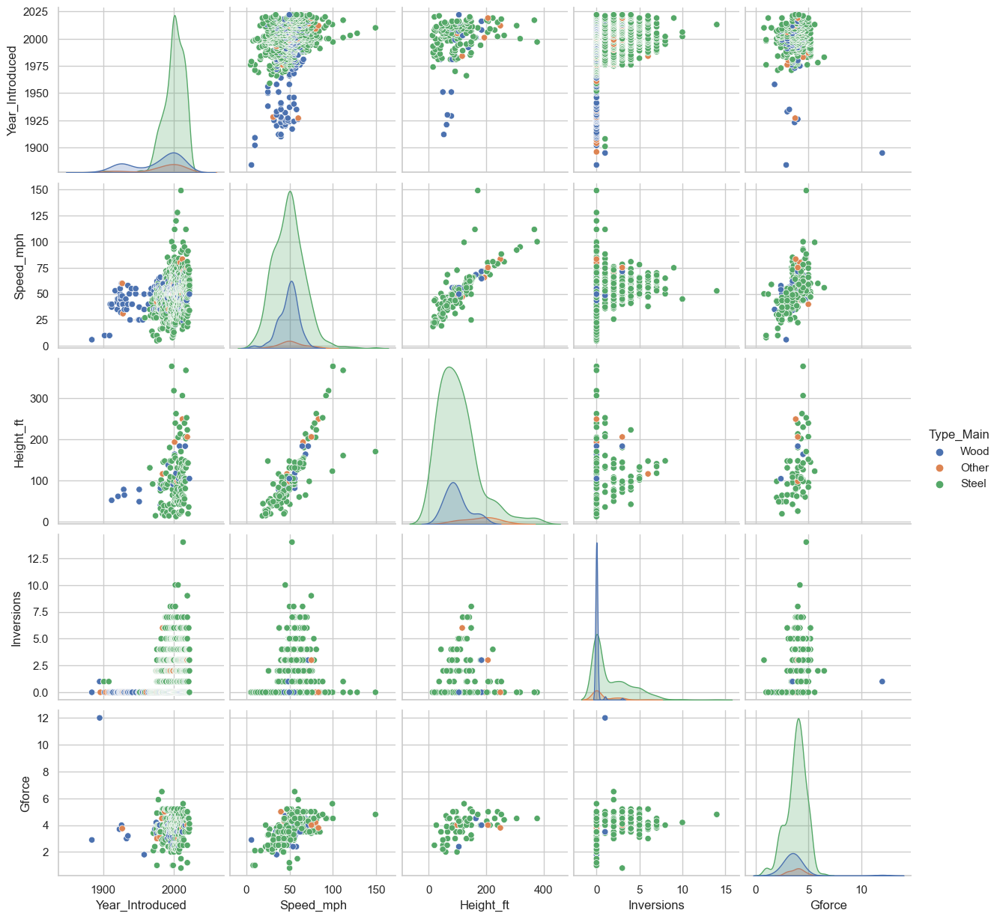

Code
# ignore the warnings
import warnings
warnings.simplefilter(action = "ignore", category = FutureWarning)Exploratory Data Analysis (EDA) is an approach to analyzing and summarizing datasets, with the primary goal of discovering patterns, relationships, and insights that may not be immediately apparent. EDA is often the first step in the data analysis process and is crucial in generating hypotheses and developing a deeper understanding of the data before building predictive models or making conclusions.
In EDA, you may use a variety of techniques such as plotting histograms, scatter plots, box plots, and other graphical representations to visualize the distribution and relationships between variables. You might also use summary statistics such as mean, median, and standard deviation to describe the central tendency and dispersion of the data.
The main objective of EDA is to understand the underlying structure of the data, identify outliers, detect anomalies, and gain insights that can inform the development of more advanced models and methods.
Several questions come to mind when we come across a new dataset. The below list shed light on some of these questions:-
• What is the distribution of the dataset?
• Are there any missing numerical values, outliers or anomalies in the dataset?
• What are the underlying assumptions in the dataset?
• Whether there exists relationships between variables in the dataset?
• How to be sure that our dataset is ready for input in a machine learning algorithm?
• How to select the most suitable algorithm for a given dataset?
The objectives of the EDA are as follows:-
To get an overview of the distribution of the dataset.
Check for missing numerical values, outliers or other anomalies in the dataset.
Discover patterns and relationships between variables in the dataset.
Check the underlying assumptions in the dataset.
Install the libraries.
Import the libararies and Modules.
Import and read the dataset(s).Import the required Python libraries
We need two Python libraries for exploratory data analysis – NumPy and Pandas.
• NumPy – NumPy is the fundamental Python library for scientific computing. It adds support for large and multi-dimensional arrays and matrices. It also supports large collection of high-level mathematical functions to operate on these arrays.
• Pandas - Pandas is a software library for Python programming language which provide tools for data manipulation and analysis tasks. It will enable us to manipulate numerical tables and time series using data structures and operations.
We need two more libraries for data visualization purpose. These are Seaborn and Matplotlib.
• Seaborn - Seaborn is a Python data visualization library based on Matplotlib. It provides a high level interface for drawing attractive and informative statistical graphics.
• Matplotlib - Matplotlib is the core data visualization library of Python programming language. It provides an object-oriented API for embedding plots into applications.
We need to import these libraries before we actually start using them. We can import them with their usual shorthand notation as follows:
# ignore the warnings
import warnings
warnings.simplefilter(action = "ignore", category = FutureWarning)This code is used to suppress warnings generated by the Python interpreter. The warnings module provides a way to raise warnings and to control the reporting of warnings.
The simplefilter method is used to ignore warnings that have a certain category. In this case, the FutureWarning category is being ignored. This is often used when you are aware of a deprecation in a library you are using and want to temporarily suppress the warning messages.
::: {.cell _cell_guid=‘b1076dfc-b9ad-4769-8c92-a6c4dae69d19’ _uuid=‘8f2839f25d086af736a60e9eeb907d3b93b6e0e5’ papermill=‘{“duration”:0.950081,“end_time”:“2021-12-31T22:25:24.521694”,“exception”:false,“start_time”:“2021-12-31T22:25:23.571613”,“status”:“completed”}’ tags=‘[]’}
import pandas as pd
import numpy as np
import matplotlib.pylab as plt
import seaborn as sns
%matplotlib inline:::
The %matplotlib inline is a Jupyter magic command that is used to display the plots generated by Matplotlib in the output cells of the Jupyter notebook.
It is a convenience command that allows you to quickly visualize the plots within the notebook, without having to manually call plt.show(). The %matplotlib inline command must be executed before any plotting is done in order to display the plots within the notebook.
Note that this command is specific to Jupyter notebooks and is not a standard part of the Python programming language.
sns.set(style="whitegrid")The sns.set(style=“whitegrid”) line is a command from the Seaborn library, a popular data visualization library based on Matplotlib.
The sns.set() function is used to set the style of the plots generated by Seaborn. The style parameter takes a string argument that specifies the style to use.
In this case, the argument is “whitegrid”, which sets the style of the plots to a white background with an overlaid grid. Seaborn provides several pre-defined styles that can be used to quickly change the look and feel of your plots.
By setting the style using the sns.set() function, you can ensure a consistent look and feel for all of your plots in a project.
from sklearn.decomposition import PCA
from sklearn.cluster import KMeans
from sklearn.linear_model import LinearRegression
from sklearn.ensemble import ExtraTreesClassifierdf = pd.read_csv('https://raw.githubusercontent.com/Dong2Yo/Dataset/main/coaster.csv')shapehead and taildtypesdescribedf.shape(1087, 56)df.head()| coaster_name | Length | Speed | Location | Status | Opening date | Type | Manufacturer | Height restriction | Model | ... | speed1 | speed2 | speed1_value | speed1_unit | speed_mph | height_value | height_unit | height_ft | Inversions_clean | Gforce_clean | |
|---|---|---|---|---|---|---|---|---|---|---|---|---|---|---|---|---|---|---|---|---|---|
| 0 | Switchback Railway | 600 ft (180 m) | 6 mph (9.7 km/h) | Coney Island | Removed | June 16, 1884 | Wood | LaMarcus Adna Thompson | NaN | Lift Packed | ... | 6 mph | 9.7 km/h | 6.0 | mph | 6.0 | 50.0 | ft | NaN | 0 | 2.9 |
| 1 | Flip Flap Railway | NaN | NaN | Sea Lion Park | Removed | 1895 | Wood | Lina Beecher | NaN | NaN | ... | NaN | NaN | NaN | NaN | NaN | NaN | NaN | NaN | 1 | 12.0 |
| 2 | Switchback Railway (Euclid Beach Park) | NaN | NaN | Cleveland, Ohio, United States | Closed | NaN | Other | NaN | NaN | NaN | ... | NaN | NaN | NaN | NaN | NaN | NaN | NaN | NaN | 0 | NaN |
| 3 | Loop the Loop (Coney Island) | NaN | NaN | Other | Removed | 1901 | Steel | Edwin Prescott | NaN | NaN | ... | NaN | NaN | NaN | NaN | NaN | NaN | NaN | NaN | 1 | NaN |
| 4 | Loop the Loop (Young's Pier) | NaN | NaN | Other | Removed | 1901 | Steel | Edwin Prescott | NaN | NaN | ... | NaN | NaN | NaN | NaN | NaN | NaN | NaN | NaN | 1 | NaN |
5 rows × 56 columns
df.columnsIndex(['coaster_name', 'Length', 'Speed', 'Location', 'Status', 'Opening date',
'Type', 'Manufacturer', 'Height restriction', 'Model', 'Height',
'Inversions', 'Lift/launch system', 'Cost', 'Trains', 'Park section',
'Duration', 'Capacity', 'G-force', 'Designer', 'Max vertical angle',
'Drop', 'Soft opening date', 'Fast Lane available', 'Replaced',
'Track layout', 'Fastrack available', 'Soft opening date.1',
'Closing date', 'Opened', 'Replaced by', 'Website',
'Flash Pass Available', 'Must transfer from wheelchair', 'Theme',
'Single rider line available', 'Restraint Style',
'Flash Pass available', 'Acceleration', 'Restraints', 'Name',
'year_introduced', 'latitude', 'longitude', 'Type_Main',
'opening_date_clean', 'speed1', 'speed2', 'speed1_value', 'speed1_unit',
'speed_mph', 'height_value', 'height_unit', 'height_ft',
'Inversions_clean', 'Gforce_clean'],
dtype='object')df.dtypescoaster_name object
Length object
Speed object
Location object
Status object
Opening date object
Type object
Manufacturer object
Height restriction object
Model object
Height object
Inversions float64
Lift/launch system object
Cost object
Trains object
Park section object
Duration object
Capacity object
G-force object
Designer object
Max vertical angle object
Drop object
Soft opening date object
Fast Lane available object
Replaced object
Track layout object
Fastrack available object
Soft opening date.1 object
Closing date object
Opened object
Replaced by object
Website object
Flash Pass Available object
Must transfer from wheelchair object
Theme object
Single rider line available object
Restraint Style object
Flash Pass available object
Acceleration object
Restraints object
Name object
year_introduced int64
latitude float64
longitude float64
Type_Main object
opening_date_clean object
speed1 object
speed2 object
speed1_value float64
speed1_unit object
speed_mph float64
height_value float64
height_unit object
height_ft float64
Inversions_clean int64
Gforce_clean float64
dtype: objectdf.describe()| Inversions | year_introduced | latitude | longitude | speed1_value | speed_mph | height_value | height_ft | Inversions_clean | Gforce_clean | |
|---|---|---|---|---|---|---|---|---|---|---|
| count | 932.000000 | 1087.000000 | 812.000000 | 812.000000 | 937.000000 | 937.000000 | 965.000000 | 171.000000 | 1087.000000 | 362.000000 |
| mean | 1.547210 | 1994.986201 | 38.373484 | -41.595373 | 53.850374 | 48.617289 | 89.575171 | 101.996491 | 1.326587 | 3.824006 |
| std | 2.114073 | 23.475248 | 15.516596 | 72.285227 | 23.385518 | 16.678031 | 136.246444 | 67.329092 | 2.030854 | 0.989998 |
| min | 0.000000 | 1884.000000 | -48.261700 | -123.035700 | 5.000000 | 5.000000 | 4.000000 | 13.100000 | 0.000000 | 0.800000 |
| 25% | 0.000000 | 1989.000000 | 35.031050 | -84.552200 | 40.000000 | 37.300000 | 44.000000 | 51.800000 | 0.000000 | 3.400000 |
| 50% | 0.000000 | 2000.000000 | 40.289800 | -76.653600 | 50.000000 | 49.700000 | 79.000000 | 91.200000 | 0.000000 | 4.000000 |
| 75% | 3.000000 | 2010.000000 | 44.799600 | 2.778100 | 63.000000 | 58.000000 | 113.000000 | 131.200000 | 2.000000 | 4.500000 |
| max | 14.000000 | 2022.000000 | 63.230900 | 153.426500 | 240.000000 | 149.100000 | 3937.000000 | 377.300000 | 14.000000 | 12.000000 |
df.info()<class 'pandas.core.frame.DataFrame'>
RangeIndex: 1087 entries, 0 to 1086
Data columns (total 56 columns):
# Column Non-Null Count Dtype
--- ------ -------------- -----
0 coaster_name 1087 non-null object
1 Length 953 non-null object
2 Speed 937 non-null object
3 Location 1087 non-null object
4 Status 874 non-null object
5 Opening date 837 non-null object
6 Type 1087 non-null object
7 Manufacturer 1028 non-null object
8 Height restriction 831 non-null object
9 Model 744 non-null object
10 Height 965 non-null object
11 Inversions 932 non-null float64
12 Lift/launch system 795 non-null object
13 Cost 382 non-null object
14 Trains 718 non-null object
15 Park section 487 non-null object
16 Duration 765 non-null object
17 Capacity 575 non-null object
18 G-force 362 non-null object
19 Designer 578 non-null object
20 Max vertical angle 357 non-null object
21 Drop 494 non-null object
22 Soft opening date 96 non-null object
23 Fast Lane available 69 non-null object
24 Replaced 173 non-null object
25 Track layout 335 non-null object
26 Fastrack available 19 non-null object
27 Soft opening date.1 96 non-null object
28 Closing date 236 non-null object
29 Opened 27 non-null object
30 Replaced by 88 non-null object
31 Website 87 non-null object
32 Flash Pass Available 50 non-null object
33 Must transfer from wheelchair 106 non-null object
34 Theme 44 non-null object
35 Single rider line available 81 non-null object
36 Restraint Style 22 non-null object
37 Flash Pass available 46 non-null object
38 Acceleration 60 non-null object
39 Restraints 24 non-null object
40 Name 35 non-null object
41 year_introduced 1087 non-null int64
42 latitude 812 non-null float64
43 longitude 812 non-null float64
44 Type_Main 1087 non-null object
45 opening_date_clean 837 non-null object
46 speed1 937 non-null object
47 speed2 935 non-null object
48 speed1_value 937 non-null float64
49 speed1_unit 937 non-null object
50 speed_mph 937 non-null float64
51 height_value 965 non-null float64
52 height_unit 965 non-null object
53 height_ft 171 non-null float64
54 Inversions_clean 1087 non-null int64
55 Gforce_clean 362 non-null float64
dtypes: float64(8), int64(2), object(46)
memory usage: 475.7+ KBThe first step in EDA is to clean and pre-process the data. This involves checking for missing values, correcting inconsistent data, handling outliers, and transforming variables as necessary.
Some of the questions we will ask ourselves are
* Are there any useless or redundant variables?
* Are there any duplicate columns?
* Does the nomenclature make sense?
* Are there any new variables we want to create?During this step, we might perform the following tasks:
1. Check for missing values: We would look for any rows in the dataset that contain missing values and determine how to handle them. For example, we might decide to remove rows with missing values or impute missing values using the mean or median of the data.
2. Correct inconsistent data: We would check for any inconsistencies in the data, such as incorrect data types or incorrect values. For example, we might find that the number of bedrooms or bathrooms is recorded as a string instead of a numerical value. We would need to correct these inconsistencies to make the data suitable for analysis.
3. Handle outliers: We would look for any outliers in the data and determine how to handle them. For example, we might decide to remove any homes with extremely high or low sale prices, as these homes may not be representative of the typical market.
4. Transform variables: We might also decide to transform some of the variables, such as converting square footage from square feet to square meters. This could help to standardize the data and make it easier to compare variables.These are just a few examples of tasks that might be performed during the data cleaning step of EDA. The specific tasks performed will depend on the dataset and the goals of the analysis.
# Check for missing values
print(df.isnull().sum())coaster_name 0
Length 134
Speed 150
Location 0
Status 213
Opening date 250
Type 0
Manufacturer 59
Height restriction 256
Model 343
Height 122
Inversions 155
Lift/launch system 292
Cost 705
Trains 369
Park section 600
Duration 322
Capacity 512
G-force 725
Designer 509
Max vertical angle 730
Drop 593
Soft opening date 991
Fast Lane available 1018
Replaced 914
Track layout 752
Fastrack available 1068
Soft opening date.1 991
Closing date 851
Opened 1060
Replaced by 999
Website 1000
Flash Pass Available 1037
Must transfer from wheelchair 981
Theme 1043
Single rider line available 1006
Restraint Style 1065
Flash Pass available 1041
Acceleration 1027
Restraints 1063
Name 1052
year_introduced 0
latitude 275
longitude 275
Type_Main 0
opening_date_clean 250
speed1 150
speed2 152
speed1_value 150
speed1_unit 150
speed_mph 150
height_value 122
height_unit 122
height_ft 916
Inversions_clean 0
Gforce_clean 725
dtype: int64# Example of dropping columns
# df.drop(['Opening date'], axis=1)df2 = df[['coaster_name',
# 'Length', 'Speed',
'Location', 'Status',
# 'Opening date',
# 'Type',
'Manufacturer',
# 'Height restriction', 'Model', 'Height',
# 'Inversions', 'Lift/launch system', 'Cost', 'Trains', 'Park section',
# 'Duration', 'Capacity', 'G-force', 'Designer', 'Max vertical angle',
# 'Drop', 'Soft opening date', 'Fast Lane available', 'Replaced',
# 'Track layout', 'Fastrack available', 'Soft opening date.1',
# 'Closing date',
# 'Opened',
# 'Replaced by', 'Website',
# 'Flash Pass Available', 'Must transfer from wheelchair', 'Theme',
# 'Single rider line available', 'Restraint Style',
# 'Flash Pass available', 'Acceleration', 'Restraints', 'Name',
'year_introduced',
'latitude', 'longitude',
'Type_Main',
'opening_date_clean',
#'speed1', 'speed2', 'speed1_value', 'speed1_unit',
'speed_mph',
#'height_value', 'height_unit',
'height_ft',
'Inversions_clean', 'Gforce_clean']].copy()converting a column in a pandas DataFrame from a string representation of a date/time to a pandas datetime object.
To find the data type of a single variable in a pandas DataFrame, you can use the dtype attribute of the corresponding column. For example, if you have a DataFrame df and you want to find the data type of the column “column_name”, you can do the following:
data_type = df2['opening_date_clean'].dtype
print(data_type)objectThis will print the data type of the column “column_name” in the DataFrame df. The data type could be one of several types, including int64, float64, object, or datetime64, among others. You can use this information to determine if the data in a particular column needs to be transformed or if there are any inconsistencies in the data that need to be corrected.
df2['opening_date_clean'] = pd.to_datetime(df2['opening_date_clean'])print(data_type)object# Rename our columns
df3 = df2.rename(columns={'coaster_name':'Coaster_Name',
'year_introduced':'Year_Introduced',
'opening_date_clean':'Opening_Date',
'speed_mph':'Speed_mph',
'height_ft':'Height_ft',
'Inversions_clean':'Inversions',
'Gforce_clean':'Gforce'})# Count the number of missing values (NaN values) in each column of a pandas DataFrame
df3.isna().sum()Coaster_Name 0
Location 0
Status 213
Manufacturer 59
Year_Introduced 0
latitude 275
longitude 275
Type_Main 0
Opening_Date 250
Speed_mph 150
Height_ft 916
Inversions 0
Gforce 725
dtype: int64# Handle missing values by imputing the mean value for each column
# works with numbers
# df = df.fillna(df.mean())The df.duplicated() method returns a boolean array indicating whether each row in the DataFrame is a duplicate of a previous row. True indicates that a row is a duplicate, and False indicates that a row is not a duplicate.
The df.loc method is then used to filter the original DataFrame df based on the boolean array returned by df.duplicated(). Specifically, df.loc[df.duplicated()] returns the rows where the value is True, meaning that those rows are duplicates.
The output of this code will be a new DataFrame containing only the rows that are duplicates in the original DataFrame. This information can be useful in identifying and removing duplicates from the data to ensure the accuracy of your analysis.
df3.loc[df3.duplicated()]| Coaster_Name | Location | Status | Manufacturer | Year_Introduced | latitude | longitude | Type_Main | Opening_Date | Speed_mph | Height_ft | Inversions | Gforce |
|---|
# Check for duplicate coaster name
df3.loc[df3.duplicated(subset=['Coaster_Name'])].head()| Coaster_Name | Location | Status | Manufacturer | Year_Introduced | latitude | longitude | Type_Main | Opening_Date | Speed_mph | Height_ft | Inversions | Gforce | |
|---|---|---|---|---|---|---|---|---|---|---|---|---|---|
| 43 | Crystal Beach Cyclone | Crystal Beach Park | Removed | Traver Engineering | 1927 | 42.8617 | -79.0598 | Wood | 1926-01-01 | 60.0 | NaN | 0 | 4.0 |
| 60 | Derby Racer | Revere Beach | Removed | Fred W. Pearce | 1937 | 42.4200 | -70.9860 | Wood | 1911-01-01 | NaN | NaN | 0 | NaN |
| 61 | Blue Streak (Conneaut Lake) | Conneaut Lake Park | Closed | NaN | 1938 | 41.6349 | -80.3180 | Wood | 1938-05-23 | 50.0 | NaN | 0 | NaN |
| 167 | Big Thunder Mountain Railroad | Other | NaN | Arrow Development (California and Florida)Dyna... | 1980 | NaN | NaN | Steel | NaT | 35.0 | NaN | 0 | NaN |
| 237 | Thunder Run (Canada's Wonderland) | Canada's Wonderland | Operating | Mack Rides | 1986 | 43.8427 | -79.5423 | Steel | 1981-05-23 | 39.8 | 32.8 | 0 | NaN |
# Checking an example duplicate
df3.query('Coaster_Name == "Crystal Beach Cyclone"')| Coaster_Name | Location | Status | Manufacturer | Year_Introduced | latitude | longitude | Type_Main | Opening_Date | Speed_mph | Height_ft | Inversions | Gforce | |
|---|---|---|---|---|---|---|---|---|---|---|---|---|---|
| 39 | Crystal Beach Cyclone | Crystal Beach Park | Removed | Traver Engineering | 1926 | 42.8617 | -79.0598 | Wood | 1926-01-01 | 60.0 | NaN | 0 | 4.0 |
| 43 | Crystal Beach Cyclone | Crystal Beach Park | Removed | Traver Engineering | 1927 | 42.8617 | -79.0598 | Wood | 1926-01-01 | 60.0 | NaN | 0 | 4.0 |
df3.columnsIndex(['Coaster_Name', 'Location', 'Status', 'Manufacturer', 'Year_Introduced',
'latitude', 'longitude', 'Type_Main', 'Opening_Date', 'Speed_mph',
'Height_ft', 'Inversions', 'Gforce'],
dtype='object')df4 = df3.loc[~df3.duplicated(subset=['Coaster_Name','Location','Opening_Date'])] \
.reset_index(drop=True).copy()df4.head()| Coaster_Name | Location | Status | Manufacturer | Year_Introduced | latitude | longitude | Type_Main | Opening_Date | Speed_mph | Height_ft | Inversions | Gforce | |
|---|---|---|---|---|---|---|---|---|---|---|---|---|---|
| 0 | Switchback Railway | Coney Island | Removed | LaMarcus Adna Thompson | 1884 | 40.5740 | -73.9780 | Wood | 1884-06-16 | 6.0 | NaN | 0 | 2.9 |
| 1 | Flip Flap Railway | Sea Lion Park | Removed | Lina Beecher | 1895 | 40.5780 | -73.9790 | Wood | 1895-01-01 | NaN | NaN | 1 | 12.0 |
| 2 | Switchback Railway (Euclid Beach Park) | Cleveland, Ohio, United States | Closed | NaN | 1896 | 41.5800 | -81.5700 | Other | NaT | NaN | NaN | 0 | NaN |
| 3 | Loop the Loop (Coney Island) | Other | Removed | Edwin Prescott | 1901 | 40.5745 | -73.9780 | Steel | 1901-01-01 | NaN | NaN | 1 | NaN |
| 4 | Loop the Loop (Young's Pier) | Other | Removed | Edwin Prescott | 1901 | 39.3538 | -74.4342 | Steel | 1901-01-01 | NaN | NaN | 1 | NaN |
df4.isna().sum()Coaster_Name 0
Location 0
Status 146
Manufacturer 58
Year_Introduced 0
latitude 207
longitude 207
Type_Main 0
Opening_Date 183
Speed_mph 140
Height_ft 831
Inversions 0
Gforce 666
dtype: int64df4.loc[df4.duplicated()]| Coaster_Name | Location | Status | Manufacturer | Year_Introduced | latitude | longitude | Type_Main | Opening_Date | Speed_mph | Height_ft | Inversions | Gforce |
|---|
df5 = df4.drop_duplicates(subset=["Coaster_Name"], inplace= False)In this example, df is the DataFrame, subset is a parameter that takes a list of column names to consider when identifying duplicates, and inplace=True specifies that the changes should be made to the original DataFrame df rather than returning a new DataFrame.
Note that drop_duplicates by default keeps the first occurrence of each duplicate and drops the remaining duplicates. If you want to keep the last occurrence of each duplicate instead, you can use the keep=‘last’ argument.
# check
df5.head()| Coaster_Name | Location | Status | Manufacturer | Year_Introduced | latitude | longitude | Type_Main | Opening_Date | Speed_mph | Height_ft | Inversions | Gforce | |
|---|---|---|---|---|---|---|---|---|---|---|---|---|---|
| 0 | Switchback Railway | Coney Island | Removed | LaMarcus Adna Thompson | 1884 | 40.5740 | -73.9780 | Wood | 1884-06-16 | 6.0 | NaN | 0 | 2.9 |
| 1 | Flip Flap Railway | Sea Lion Park | Removed | Lina Beecher | 1895 | 40.5780 | -73.9790 | Wood | 1895-01-01 | NaN | NaN | 1 | 12.0 |
| 2 | Switchback Railway (Euclid Beach Park) | Cleveland, Ohio, United States | Closed | NaN | 1896 | 41.5800 | -81.5700 | Other | NaT | NaN | NaN | 0 | NaN |
| 3 | Loop the Loop (Coney Island) | Other | Removed | Edwin Prescott | 1901 | 40.5745 | -73.9780 | Steel | 1901-01-01 | NaN | NaN | 1 | NaN |
| 4 | Loop the Loop (Young's Pier) | Other | Removed | Edwin Prescott | 1901 | 39.3538 | -74.4342 | Steel | 1901-01-01 | NaN | NaN | 1 | NaN |
This involves examining each variable in isolation to understand its distribution, central tendency, and spread. This can be done using techniques such as histograms, density plots, and box plots.
Univariate distribution
In univariate distribution, there is only one variable under consideration. It is the simplest form of analysis because only one quantity changes. It does not deal with causes or relationships.
The main purpose of the analysis is to describe the data and find patterns that exist within it. We can describe patterns found in univariate data using central tendency (mean, median and mode) and dispersion (range, variance, standard deviation, maximum and minimum values and interquartile range).
We can visualize the univariate data using various types of charts and graphs. These are frequency distribution tables, histograms, bar charts, pie charts and frequency polygons.
In Python, using the pandas library, univariate analysis can be performed using several built-in functions and methods.
1. Descriptive statistics: Use the describe method to get a summary of the central tendency, dispersion, and shape of the distribution of the data. df5['Year_Introduced'].describe()count 990.000000
mean 1994.054545
std 23.872027
min 1884.000000
25% 1988.000000
50% 2000.000000
75% 2009.000000
max 2022.000000
Name: Year_Introduced, dtype: float64df5['Type_Main'].value_counts()Steel 728
Wood 191
Other 71
Name: Type_Main, dtype: int64df5['Year_Introduced'].value_counts()1999 46
2000 45
1998 30
2001 29
2002 28
..
1956 1
1959 1
1961 1
1895 1
1884 1
Name: Year_Introduced, Length: 101, dtype: int64ax = df5['Year_Introduced'].value_counts() \
.head(10) \
.plot(kind='bar', title='Top 10 Years Coasters Introduced')
ax.set_xlabel('Year Introduced')
ax.set_ylabel('Count')Text(0, 0.5, 'Count')3. Histogram: Use the hist method to visualize the distribution of the data in a column. df5['Year_Introduced'].hist()<AxesSubplot: >ax = df5['Speed_mph'].plot(kind='hist',
bins=20,
title='Coaster Speed (mph)')
ax.set_xlabel('Speed (mph)')Text(0.5, 0, 'Speed (mph)')4. Density Plot: Use the density method to create a density plot, which is a smoothed version of a histogramdf5['Speed_mph'].plot.density()<AxesSubplot: ylabel='Density'>ax = df5['Speed_mph'].plot(kind='kde',
title='Coaster Speed (mph)')
ax.set_xlabel('Speed (mph)')Text(0.5, 0, 'Speed (mph)')5. Box Plot: Use the boxplot method to visualize the distribution of the data in a column and identify any outliers.df5.boxplot(column='Speed_mph')<AxesSubplot: >6. Violin Plot: Use the violinplot method to visualize the distribution of the data in a column and identify any outliers.sns.violinplot(x=df5['Speed_mph'])<AxesSubplot: xlabel='Speed_mph'>Bivariate distribution
This type of data distribution involves two different variables. The analysis of this type of data deals with causes and relationships and the analysis is done to find out the relationship among the two variables. A very common example of bivariate distribution is height and weight of a single person.
Bivariate analysis means the analysis of bivariate data. It is one of the simplest forms of statistical analysis, used to find out if there is a relationship between two sets of values. Thus bivariate data analysis involves comparisons, exploring relationships, finding causes and explanations. These variables are often plotted on X and Y axis on the graph for better understanding of data and one of these variables is independent while the other is dependent.
Common types of bivariate analysis include drawing scatter plot, regression analysis and finding correlation coefficients. A scatter plot is used to find out if there exists any relationship between two variables. Regression analysis is a statistical method for estimating the relationships between variables. Correlation coefficient analysis measures the strength and direction of a linear relationship between two variables on a scatter plot.
Scatterplot
Heatmap Correlation
Pairplot
Groupby comparisons
df5.plot(kind='scatter',
x='Speed_mph',
y='Height_ft',
title='Coaster Speed vs. Height')
plt.show()ax = sns.scatterplot(x='Speed_mph',
y='Height_ft',
hue='Year_Introduced',
data=df5)
ax.set_title('Coaster Speed vs. Height')
plt.show()sns.pairplot(df5,
vars=['Year_Introduced','Speed_mph',
'Height_ft','Inversions','Gforce'],
hue='Type_Main')
plt.show()
2. Calculate the correlation: Use the corr method to calculate the Pearson correlation coefficient, which measures the linear relationship between two variables. A value of +1 indicates a strong positive relationship, a value of -1 indicates a strong negative relationship, and a value of 0 indicates no relationship.# Calculate the correlation
correlation = df5["Year_Introduced"].corr(df5["Gforce"])
print("Correlation:", correlation)Correlation: -0.07340269375260203df5_corr = df5[['Year_Introduced','Speed_mph',
'Height_ft','Inversions','Gforce']].dropna().corr()
df5_corr| Year_Introduced | Speed_mph | Height_ft | Inversions | Gforce | |
|---|---|---|---|---|---|
| Year_Introduced | 1.000000 | 0.171978 | 0.135413 | -0.209887 | 0.160247 |
| Speed_mph | 0.171978 | 1.000000 | 0.733999 | -0.028705 | 0.607383 |
| Height_ft | 0.135413 | 0.733999 | 1.000000 | -0.079736 | 0.466482 |
| Inversions | -0.209887 | -0.028705 | -0.079736 | 1.000000 | 0.275991 |
| Gforce | 0.160247 | 0.607383 | 0.466482 | 0.275991 | 1.000000 |
sns.heatmap(df5_corr, annot=True)<AxesSubplot: >3. Check for outliers: Use box plots, violin plots, or scatter plots to identify any outliers in the data. Outliers can greatly affect the correlation coefficient and need to be treated accordingly.# Check for outliers
sns.boxplot(x="Height_ft", data=df5)<AxesSubplot: xlabel='Height_ft'>sns.boxplot(x="Year_Introduced", data=df5)<AxesSubplot: xlabel='Year_Introduced'>4. Determine the type of relationship: Determine if the relationship is linear, non-linear, or non-existent. This can be done by visual inspection of the plots or by using statistical methods such as regression analysis.# Determine the type of relationship
sns.regplot(x="Height_ft", y="Year_Introduced", data=df5)<AxesSubplot: xlabel='Height_ft', ylabel='Year_Introduced'>5. Test for significance: Use hypothesis testing to determine if the correlation between the two variables is statistically significant. This can be done using a t-test or an ANOVA test.from scipy.stats import pearsonr
correlation, p_value = pearsonr(df5["Inversions"], df5["Year_Introduced"])
print("Correlation:", correlation, "P-value:", p_value)Correlation: 0.2337005348319422 P-value: 9.527794348890386e-14The six steps are a general guide for conducting bivariate analysis, and the specific methods used may vary depending on the type of data, the research question, and the tools available. However, by following these steps, you can gain a deeper understanding of the relationship between two variables and make informed conclusions about the data.
6. Draw conclusions: Based on the results of the bivariate analysis, draw conclusions about the relationship between the two variables and any potential causality between them.# Draw conclusions
if p_value < 0.05:
print("There is a statistically significant relationship between Inversions and Years Introduced.")
else:
print("There is not a statistically significant relationship between Inversions and Years Introduced.")There is a statistically significant relationship between Inversions and Years Introduced.What are the locations with the fastest roller coasters (minimum of 10)?
ax = df5.query('Location != "Other"') \
.groupby('Location')['Speed_mph'] \
.agg(['mean','count']) \
.query('count >= 10') \
.sort_values('mean')['mean'] \
.plot(kind='barh', figsize=(12, 5), title='Average Coast Speed by Location')
ax.set_xlabel('Average Coaster Speed')
plt.show()Multivariate distribution
When the dataset involves three or more variables, it is categorized under multivariate distribution. Multivariate analysis is used to study more complex sets of data. It is usually unsuitable for small sets of data.
Multivariate analysis helps to identify patterns, relationships, and interactions between multiple variables and provides a more comprehensive understanding of the data than univariate or bivariate analysis.
There are wide variety of analysis techniques to perform multivariate analysis. The choice of analysis techniques depends on the dataset and our goals to be achieved.
Some examples of multivariate analysis techniques are additive tree, cluster analysis, correspondence analysis, factor analysis, MANOVA (multivariate analysis of variance), multidimensional scaling, multiple regression analysis, principal component analysis and redundancy analysis.
There are several useful multivariate graphical EDA techniques, which are used to look at the distribution of multivariate data. These are as follows:-
Side-by-Side Boxplots
Scatterplots
Curve Fitting
Heat Maps and 3-D Surface PlotsHere are the steps for conducting multivariate analysis:
1. Identify the research question: Clearly define the research question you want to answer with the multivariate analysis.
2. Prepare the data: Clean and transform the data as needed, and create a new dataset that includes all the variables of interest.
3. Visualize the relationships: Use scatter plots, pairwise plots, or heat maps to visualize the relationships between all the variables.
4. Perform dimension reduction: Use techniques such as principal component analysis (PCA) or singular value decomposition (SVD) to reduce the number of variables while retaining the maximum amount of information.
5. Clustering: Use clustering algorithms such as k-means or hierarchical clustering to group similar observations based on the variables.
6. Modeling: Use multivariate regression, logistic regression, or other statistical models to estimate the relationships between the variables and predict outcomes.
7. Evaluate the models: Evaluate the performance of the models using metrics such as mean squared error (MSE), root mean squared error (RMSE), or accuracy.
8. Draw conclusions: Based on the results of the analysis, draw conclusions about the relationships between the variables and any potential causality between them.These steps are a general guide for conducting multivariate analysis, and the specific methods used may vary depending on the type of data, the research question, and the tools available.
# Load the data
df6 = pd.read_csv("https://raw.githubusercontent.com/Dong2Yo/Dataset/main/winequality.csv")df6.head()| type | fixed acidity | volatile acidity | citric acid | residual sugar | chlorides | free sulfur dioxide | total sulfur dioxide | density | pH | sulphates | alcohol | quality | |
|---|---|---|---|---|---|---|---|---|---|---|---|---|---|
| 0 | white | 7.0 | 0.27 | 0.36 | 20.7 | 0.045 | 45.0 | 170.0 | 1.0010 | 3.00 | 0.45 | 8.8 | 6 |
| 1 | white | 6.3 | 0.30 | 0.34 | 1.6 | 0.049 | 14.0 | 132.0 | 0.9940 | 3.30 | 0.49 | 9.5 | 6 |
| 2 | white | 8.1 | 0.28 | 0.40 | 6.9 | 0.050 | 30.0 | 97.0 | 0.9951 | 3.26 | 0.44 | 10.1 | 6 |
| 3 | white | 7.2 | 0.23 | 0.32 | 8.5 | 0.058 | 47.0 | 186.0 | 0.9956 | 3.19 | 0.40 | 9.9 | 6 |
| 4 | white | 7.2 | 0.23 | 0.32 | 8.5 | 0.058 | 47.0 | 186.0 | 0.9956 | 3.19 | 0.40 | 9.9 | 6 |
df6.tail()| type | fixed acidity | volatile acidity | citric acid | residual sugar | chlorides | free sulfur dioxide | total sulfur dioxide | density | pH | sulphates | alcohol | quality | |
|---|---|---|---|---|---|---|---|---|---|---|---|---|---|
| 6492 | red | 6.2 | 0.600 | 0.08 | 2.0 | 0.090 | 32.0 | 44.0 | 0.99490 | 3.45 | 0.58 | 10.5 | 5 |
| 6493 | red | 5.9 | 0.550 | 0.10 | 2.2 | 0.062 | 39.0 | 51.0 | 0.99512 | 3.52 | NaN | 11.2 | 6 |
| 6494 | red | 6.3 | 0.510 | 0.13 | 2.3 | 0.076 | 29.0 | 40.0 | 0.99574 | 3.42 | 0.75 | 11.0 | 6 |
| 6495 | red | 5.9 | 0.645 | 0.12 | 2.0 | 0.075 | 32.0 | 44.0 | 0.99547 | 3.57 | 0.71 | 10.2 | 5 |
| 6496 | red | 6.0 | 0.310 | 0.47 | 3.6 | 0.067 | 18.0 | 42.0 | 0.99549 | 3.39 | 0.66 | 11.0 | 6 |
df6.shape(6497, 13)df6.describe()| fixed acidity | volatile acidity | citric acid | residual sugar | chlorides | free sulfur dioxide | total sulfur dioxide | density | pH | sulphates | alcohol | quality | |
|---|---|---|---|---|---|---|---|---|---|---|---|---|
| count | 6487.000000 | 6489.000000 | 6494.000000 | 6495.000000 | 6495.000000 | 6497.000000 | 6497.000000 | 6497.000000 | 6488.000000 | 6493.000000 | 6497.000000 | 6497.000000 |
| mean | 7.216579 | 0.339691 | 0.318722 | 5.444326 | 0.056042 | 30.525319 | 115.744574 | 0.994697 | 3.218395 | 0.531215 | 10.491801 | 5.818378 |
| std | 1.296750 | 0.164649 | 0.145265 | 4.758125 | 0.035036 | 17.749400 | 56.521855 | 0.002999 | 0.160748 | 0.148814 | 1.192712 | 0.873255 |
| min | 3.800000 | 0.080000 | 0.000000 | 0.600000 | 0.009000 | 1.000000 | 6.000000 | 0.987110 | 2.720000 | 0.220000 | 8.000000 | 3.000000 |
| 25% | 6.400000 | 0.230000 | 0.250000 | 1.800000 | 0.038000 | 17.000000 | 77.000000 | 0.992340 | 3.110000 | 0.430000 | 9.500000 | 5.000000 |
| 50% | 7.000000 | 0.290000 | 0.310000 | 3.000000 | 0.047000 | 29.000000 | 118.000000 | 0.994890 | 3.210000 | 0.510000 | 10.300000 | 6.000000 |
| 75% | 7.700000 | 0.400000 | 0.390000 | 8.100000 | 0.065000 | 41.000000 | 156.000000 | 0.996990 | 3.320000 | 0.600000 | 11.300000 | 6.000000 |
| max | 15.900000 | 1.580000 | 1.660000 | 65.800000 | 0.611000 | 289.000000 | 440.000000 | 1.038980 | 4.010000 | 2.000000 | 14.900000 | 9.000000 |
df6.info()<class 'pandas.core.frame.DataFrame'>
RangeIndex: 6497 entries, 0 to 6496
Data columns (total 13 columns):
# Column Non-Null Count Dtype
--- ------ -------------- -----
0 type 6497 non-null object
1 fixed acidity 6487 non-null float64
2 volatile acidity 6489 non-null float64
3 citric acid 6494 non-null float64
4 residual sugar 6495 non-null float64
5 chlorides 6495 non-null float64
6 free sulfur dioxide 6497 non-null float64
7 total sulfur dioxide 6497 non-null float64
8 density 6497 non-null float64
9 pH 6488 non-null float64
10 sulphates 6493 non-null float64
11 alcohol 6497 non-null float64
12 quality 6497 non-null int64
dtypes: float64(11), int64(1), object(1)
memory usage: 660.0+ KBdf6.dtypestype object
fixed acidity float64
volatile acidity float64
citric acid float64
residual sugar float64
chlorides float64
free sulfur dioxide float64
total sulfur dioxide float64
density float64
pH float64
sulphates float64
alcohol float64
quality int64
dtype: objectdf6.isna()| type | fixed acidity | volatile acidity | citric acid | residual sugar | chlorides | free sulfur dioxide | total sulfur dioxide | density | pH | sulphates | alcohol | quality | |
|---|---|---|---|---|---|---|---|---|---|---|---|---|---|
| 0 | False | False | False | False | False | False | False | False | False | False | False | False | False |
| 1 | False | False | False | False | False | False | False | False | False | False | False | False | False |
| 2 | False | False | False | False | False | False | False | False | False | False | False | False | False |
| 3 | False | False | False | False | False | False | False | False | False | False | False | False | False |
| 4 | False | False | False | False | False | False | False | False | False | False | False | False | False |
| ... | ... | ... | ... | ... | ... | ... | ... | ... | ... | ... | ... | ... | ... |
| 6492 | False | False | False | False | False | False | False | False | False | False | False | False | False |
| 6493 | False | False | False | False | False | False | False | False | False | False | True | False | False |
| 6494 | False | False | False | False | False | False | False | False | False | False | False | False | False |
| 6495 | False | False | False | False | False | False | False | False | False | False | False | False | False |
| 6496 | False | False | False | False | False | False | False | False | False | False | False | False | False |
6497 rows × 13 columns
df6.duplicated().sum()1168df6['fixed acidity'].describe()count 6487.000000
mean 7.216579
std 1.296750
min 3.800000
25% 6.400000
50% 7.000000
75% 7.700000
max 15.900000
Name: fixed acidity, dtype: float64sns.histplot(df6['fixed acidity'])<AxesSubplot: xlabel='fixed acidity', ylabel='Count'>print(f"Skewness: {df6['fixed acidity'].skew()}")
print(f"Kurtosis: {df6['fixed acidity'].kurt()}")Skewness: 1.7228045308969795
Kurtosis: 5.057726963492721From this information we see how the distribution:
does not follow a normal curve
show spikes
has kurtosis and asymmetry values greater than 1We do this for each variable, and we will have a pseudo-complete descriptive picture of their behavior.
We need this work to fully understand each variable, and unlocks the study of the relationship between variables.
Now the idea is to find interesting relationships that show the influence of one variable on the other, preferably on the target.
We can start exploring relationships with the help of Seaborn and pairplot.
# Visualize the relationships
sns.pairplot(df6)<seaborn.axisgrid.PairGrid at 0x1f4cb67ca90>As you can see, pairplot displays all the variables against each other in a scatterplot. It is very useful for grasping the most important relationships without having to go through every single combination manually.
Be warned though — it is computationally expensive to compute, so it is best suited for datasets with relatively low number of variables like this one.
The best way to understand the relationship between a numeric variable and a categorical variable is through a boxplot.
Let’s create a boxplot for sulphates, citric acid, and chlorides. Why these variables? Because visually they show slightly more marked segmentations for a given wine type.
sns.catplot(x="quality", y="sulphates", data=df6, kind="box", aspect=1.5)
plt.title("Boxplot for quality vs sulphates")
plt.show()sns.catplot(x="quality", y="citric acid", data=df6, kind="box", aspect=1.5)
plt.title("Boxplot for quality vs citric acid")
plt.show()sns.catplot(x="quality", y="chlorides", data=df6, kind="box", aspect=1.5)
plt.title("Boxplot for quality vs chlorides")
plt.show()With Seaborn we can create a scatterplot and visualize which wine class a point belongs to. Just specify the hue parameter.
sns.scatterplot(x="chlorides", y="citric acid", hue="quality", data=df6, palette="Dark2", s=80)
plt.title("Relationship between chlorides, citric acid and quality")
plt.show()PCA stands for Principal Component Analysis, which is a widely used statistical method for dimensionality reduction.
PCA is a technique that is used to transform a set of correlated variables into a set of uncorrelated variables, called principal components, which explain the maximum amount of variability in the data. The first principal component explains the most variability in the data, the second principal component explains the second most variability, and so on. By reducing the number of variables, PCA makes it easier to visualize and analyze large and complex datasets, and can also improve the performance of machine learning models.
PCA only works with numerical data.
To change the string values “white” and “red” in a column to integer values, we can use the map method in Python.
df6['type'] = df6['type'].map({'white': 0, 'red': 1})df6.dtypestype int64
fixed acidity float64
volatile acidity float64
citric acid float64
residual sugar float64
chlorides float64
free sulfur dioxide float64
total sulfur dioxide float64
density float64
pH float64
sulphates float64
alcohol float64
quality int64
dtype: objectdf6['type'] = df6['type'].astype(float)
df6['quality'] = df6['quality'].astype(float)df6.dtypestype float64
fixed acidity float64
volatile acidity float64
citric acid float64
residual sugar float64
chlorides float64
free sulfur dioxide float64
total sulfur dioxide float64
density float64
pH float64
sulphates float64
alcohol float64
quality float64
dtype: objectPCA does not accept missing values encoded as NaN natively.
missing = df6.isna().sum()
missingtype 0
fixed acidity 10
volatile acidity 8
citric acid 3
residual sugar 2
chlorides 2
free sulfur dioxide 0
total sulfur dioxide 0
density 0
pH 9
sulphates 4
alcohol 0
quality 0
dtype: int64sns.heatmap(df6.isnull(), cbar=False)
plt.show()
#heatmap is not a good visual representation.# plot the missing value
missing.plot.bar()
plt.show()Handling missing data is a common problem in data analysis, and there are several methods for addressing it. Here are a few common approaches:
1. Drop missing values: This involves removing all rows or columns that contain missing values. This method is simple and straightforward, but can result in a loss of important information if too many values are missing.
'df.dropna(axis=0, inplace=True)'
2. Fill missing values: This involves replacing missing values with a value from the same column (such as the mean or median), or from another column.
'df.fillna(df.mean(), inplace=True)'
3. Interpolate missing values: This involves filling in missing values by estimating their values based on the values of other observations in the same column.
'df.interpolate(inplace=True)'
4. Impute missing values: This involves filling in missing values using statistical methods, such as linear regression or k-nearest neighbors.
'from sklearn.impute import KNNImputer'
'imputer = KNNImputer()'
'df_imputed = imputer.fit_transform(df)''The appropriate method for handling missing data depends on the type of data and the context of the problem. It’s important to carefully consider the trade-off between keeping missing data and imputing it, and to evaluate the effect of the chosen method on the results of any subsequent analysis.
from sklearn.impute import KNNImputer
imputer = KNNImputer()
df6_imputed = imputer.fit_transform(df6)df6_imputedarray([[ 0. , 7. , 0.27 , ..., 0.45 , 8.8 , 6. ],
[ 0. , 6.3 , 0.3 , ..., 0.49 , 9.5 , 6. ],
[ 0. , 8.1 , 0.28 , ..., 0.44 , 10.1 , 6. ],
...,
[ 1. , 6.3 , 0.51 , ..., 0.75 , 11. , 6. ],
[ 1. , 5.9 , 0.645, ..., 0.71 , 10.2 , 5. ],
[ 1. , 6. , 0.31 , ..., 0.66 , 11. , 6. ]])df7 = df6.interpolate(inplace=True)df6.head()| type | fixed acidity | volatile acidity | citric acid | residual sugar | chlorides | free sulfur dioxide | total sulfur dioxide | density | pH | sulphates | alcohol | quality | |
|---|---|---|---|---|---|---|---|---|---|---|---|---|---|
| 0 | 0.0 | 7.0 | 0.27 | 0.36 | 20.7 | 0.045 | 45.0 | 170.0 | 1.0010 | 3.00 | 0.45 | 8.8 | 6.0 |
| 1 | 0.0 | 6.3 | 0.30 | 0.34 | 1.6 | 0.049 | 14.0 | 132.0 | 0.9940 | 3.30 | 0.49 | 9.5 | 6.0 |
| 2 | 0.0 | 8.1 | 0.28 | 0.40 | 6.9 | 0.050 | 30.0 | 97.0 | 0.9951 | 3.26 | 0.44 | 10.1 | 6.0 |
| 3 | 0.0 | 7.2 | 0.23 | 0.32 | 8.5 | 0.058 | 47.0 | 186.0 | 0.9956 | 3.19 | 0.40 | 9.9 | 6.0 |
| 4 | 0.0 | 7.2 | 0.23 | 0.32 | 8.5 | 0.058 | 47.0 | 186.0 | 0.9956 | 3.19 | 0.40 | 9.9 | 6.0 |
df6.isnull().sum()type 0
fixed acidity 0
volatile acidity 0
citric acid 0
residual sugar 0
chlorides 0
free sulfur dioxide 0
total sulfur dioxide 0
density 0
pH 0
sulphates 0
alcohol 0
quality 0
dtype: int64# Perform dimension reduction
pca = PCA(n_components=2)
principal_components = pca.fit_transform(df6)
principal_df6 = pd.DataFrame(data = principal_components, columns = ['PC1', 'PC2'])sns.regplot(x=principal_df6['PC1'], y=df6['quality'])
plt.show()
sns.regplot(x=principal_df6['PC2'], y=df6['quality'])
plt.show()# Modeling
reg = LinearRegression().fit(principal_df6[['PC1', 'PC2']], df6['quality'])
# Evaluate the models
R_squared = reg.score(principal_df6[['PC1', 'PC2']], df6['quality'])
print("R-squared:", R_squared)
# Draw conclusions
print("The PCA and clustering methods were able to reduce the data to two principal components and group the observations into 3 clusters.")
print("The linear regression model using the two principal components as predictors was able to explain", R_squared, "of the variation in the target variable.")R-squared: 0.017028762790542773
The PCA and clustering methods were able to reduce the data to two principal components and group the observations into 3 clusters.
The linear regression model using the two principal components as predictors was able to explain 0.017028762790542773 of the variation in the target variable.This is a crucial step in EDA, where the results of the analysis are visualized using various plots and charts. This helps in identifying patterns and relationships that may not be immediately apparent from the raw data.
df6.quality.value_counts().plot(kind="bar")
plt.title("Value counts of the target variable")
plt.xlabel("Wine type")
plt.xticks(rotation=0)
plt.ylabel("Count")
plt.show()# Plot the distribution of wine quality
sns.countplot(x="quality", data=df6)
plt.show()plt.figure(figsize=(10,7))
plt.scatter(x="alcohol",y="fixed acidity",data =df6,marker= 'o',c="m")
plt.xlabel("alcohol",fontsize=15)
plt.ylabel("fixed_acidity",fontsize=15)
plt.show()sns.lmplot(x="alcohol",y="fixed acidity",data=df6)
plt.plot()[]plt.figure(figsize=(10,7))
plt.scatter(x="volatile acidity",y="alcohol",data =df6,marker= 'o',c="m")
plt.xlabel("volatile_acidity",fontsize=15)
plt.ylabel("alcohol",fontsize=15)
plt.show()sns.set()
sns.histplot(df6["quality"],bins=10)
plt.show()
plt.figure(figsize=(10,7))
sns.regplot(x="citric acid",y="chlorides",data =df6,marker= 'o',color="m")
plt.show()corr_matrix = df6.corr()
sns.heatmap(corr_matrix)
plt.show()sns.set()
plt.figure(figsize=(20,10))
sns.boxplot(data=df6,palette="Set3")
plt.show()There are some outliers. We can remove the outliers.
lower_limit = df6["free sulfur dioxide"].mean() - 3*df6["free sulfur dioxide"].std()
upper_limit = df6["free sulfur dioxide"].mean() + 3*df6["free sulfur dioxide"].std()print(lower_limit,upper_limit)-22.722879937833156 83.77351869418224df7 = df6[(df6["free sulfur dioxide"] > lower_limit) & (df6["free sulfur dioxide"] < upper_limit)]df6.shape[0] - df7.shape[0]36lower_limit = df7['total sulfur dioxide'].mean() - 3*df7['total sulfur dioxide'].std()
upper_limit = df7['total sulfur dioxide'].mean() + 3*df7['total sulfur dioxide'].std()
print(lower_limit,upper_limit)-53.15243132839596 283.65436601342924df8 = df7[(df7['total sulfur dioxide'] > lower_limit) & (df7['total sulfur dioxide'] < upper_limit)]
df8.head()| type | fixed acidity | volatile acidity | citric acid | residual sugar | chlorides | free sulfur dioxide | total sulfur dioxide | density | pH | sulphates | alcohol | quality | |
|---|---|---|---|---|---|---|---|---|---|---|---|---|---|
| 0 | 0.0 | 7.0 | 0.27 | 0.36 | 20.7 | 0.045 | 45.0 | 170.0 | 1.0010 | 3.00 | 0.45 | 8.8 | 6.0 |
| 1 | 0.0 | 6.3 | 0.30 | 0.34 | 1.6 | 0.049 | 14.0 | 132.0 | 0.9940 | 3.30 | 0.49 | 9.5 | 6.0 |
| 2 | 0.0 | 8.1 | 0.28 | 0.40 | 6.9 | 0.050 | 30.0 | 97.0 | 0.9951 | 3.26 | 0.44 | 10.1 | 6.0 |
| 3 | 0.0 | 7.2 | 0.23 | 0.32 | 8.5 | 0.058 | 47.0 | 186.0 | 0.9956 | 3.19 | 0.40 | 9.9 | 6.0 |
| 4 | 0.0 | 7.2 | 0.23 | 0.32 | 8.5 | 0.058 | 47.0 | 186.0 | 0.9956 | 3.19 | 0.40 | 9.9 | 6.0 |
df7.shape[0] - df8.shape[0]5lower_limit = df8['residual sugar'].mean() - 3*df8['residual sugar'].std()
upper_limit = df8['residual sugar'].mean() + 3*df8['residual sugar'].std()
print(lower_limit,upper_limit)-8.837326393286151 19.713565550659137df9 = df8[(df8['residual sugar'] > lower_limit) & (df8['residual sugar'] < upper_limit)]
df9.head()| type | fixed acidity | volatile acidity | citric acid | residual sugar | chlorides | free sulfur dioxide | total sulfur dioxide | density | pH | sulphates | alcohol | quality | |
|---|---|---|---|---|---|---|---|---|---|---|---|---|---|
| 1 | 0.0 | 6.3 | 0.30 | 0.34 | 1.6 | 0.049 | 14.0 | 132.0 | 0.9940 | 3.30 | 0.49 | 9.5 | 6.0 |
| 2 | 0.0 | 8.1 | 0.28 | 0.40 | 6.9 | 0.050 | 30.0 | 97.0 | 0.9951 | 3.26 | 0.44 | 10.1 | 6.0 |
| 3 | 0.0 | 7.2 | 0.23 | 0.32 | 8.5 | 0.058 | 47.0 | 186.0 | 0.9956 | 3.19 | 0.40 | 9.9 | 6.0 |
| 4 | 0.0 | 7.2 | 0.23 | 0.32 | 8.5 | 0.058 | 47.0 | 186.0 | 0.9956 | 3.19 | 0.40 | 9.9 | 6.0 |
| 5 | 0.0 | 8.1 | 0.28 | 0.40 | 6.9 | 0.050 | 30.0 | 97.0 | 0.9951 | 3.26 | 0.44 | 10.1 | 6.0 |
df8.shape[0] - df9.shape[0]26df9.isnull().sum()type 0
fixed acidity 0
volatile acidity 0
citric acid 0
residual sugar 0
chlorides 0
free sulfur dioxide 0
total sulfur dioxide 0
density 0
pH 0
sulphates 0
alcohol 0
quality 0
dtype: int64In the final stage of EDA, simple models such as linear regression or decision trees may be used to test the relationships identified in the previous steps.
df9.quality.value_counts()6.0 2806
5.0 2116
7.0 1075
4.0 214
8.0 189
3.0 25
9.0 5
Name: quality, dtype: int64df9.quality.value_counts(normalize = True)6.0 0.436392
5.0 0.329082
7.0 0.167185
4.0 0.033281
8.0 0.029393
3.0 0.003888
9.0 0.000778
Name: quality, dtype: float64df9.head()| type | fixed acidity | volatile acidity | citric acid | residual sugar | chlorides | free sulfur dioxide | total sulfur dioxide | density | pH | sulphates | alcohol | quality | |
|---|---|---|---|---|---|---|---|---|---|---|---|---|---|
| 1 | 0.0 | 6.3 | 0.30 | 0.34 | 1.6 | 0.049 | 14.0 | 132.0 | 0.9940 | 3.30 | 0.49 | 9.5 | 6.0 |
| 2 | 0.0 | 8.1 | 0.28 | 0.40 | 6.9 | 0.050 | 30.0 | 97.0 | 0.9951 | 3.26 | 0.44 | 10.1 | 6.0 |
| 3 | 0.0 | 7.2 | 0.23 | 0.32 | 8.5 | 0.058 | 47.0 | 186.0 | 0.9956 | 3.19 | 0.40 | 9.9 | 6.0 |
| 4 | 0.0 | 7.2 | 0.23 | 0.32 | 8.5 | 0.058 | 47.0 | 186.0 | 0.9956 | 3.19 | 0.40 | 9.9 | 6.0 |
| 5 | 0.0 | 8.1 | 0.28 | 0.40 | 6.9 | 0.050 | 30.0 | 97.0 | 0.9951 | 3.26 | 0.44 | 10.1 | 6.0 |
quaity_mapping = { 3.0 : "Low", 4.0 : "Low", 5.0: "Medium", 6.0 : "Medium", 7.0 : "Medium", 8.0 : "High", 9.0 : "High"}
df9.loc[:, "quality"] = df9["quality"].map(quaity_mapping)df9.quality.value_counts()Medium 5997
Low 239
High 194
Name: quality, dtype: int64df9["quality"] = df9["quality"].astype("category")
df9["quality"] = df9["quality"].cat.codesdf9.quality.value_counts()2 5997
1 239
0 194
Name: quality, dtype: int64Let us select the best features for the model.
ExtraTreesClassifier is an ensemble method for classification that uses multiple decision trees to make predictions. It’s a type of random forest algorithm, where each tree in the forest is built using a different random subset of the data and random subset of features. The final prediction is made by taking the average prediction from all the trees.
Once you’ve created the model instance, you can fit it to your training data and use it to make predictions on new data. To do this, you’ll need to call the fit method on the model and pass in your training data.
x = df9.drop("quality",axis=True)
y = df9["quality"]
model = ExtraTreesClassifier()
model.fit(x,y)ExtraTreesClassifier()In a Jupyter environment, please rerun this cell to show the HTML representation or trust the notebook.
ExtraTreesClassifier()
In machine learning, feature importance refers to the measure of how much a particular feature contributes to the prediction made by the model. In the case of decision tree based models, feature importances are typically calculated based on the reduction in impurity (such as Gini impurity or entropy) achieved when splitting a node in the tree based on that feature.
In the ExtraTreesClassifier model, the feature importances are stored in the feature_importances_ attribute. This attribute is an array where each element corresponds to the feature importance of a feature in the training data. The larger the value of the element, the more important the feature is considered by the model.
print(model.feature_importances_)[0.00803736 0.08489505 0.11022261 0.08514657 0.08821102 0.08393457
0.10026815 0.08660405 0.08501652 0.08455986 0.09004359 0.09306065]We are printing the array of feature importances calculated by the ExtraTreesClassifier model.
This information can be used to determine which features are the most important in predicting the target variable, and can be useful in feature selection and feature engineering.
feat_importances = pd.Series(model.feature_importances_,index =x.columns)
feat_importances.nlargest(9).plot(kind="barh")
plt.show()We are creating a pandas Series named feat_importances from the feature importances of the model (ExtraTreesClassifier). The index of the Series is set to the columns of the input feature data x, so each feature importance is associated with its corresponding feature.
Next, the code uses the nlargest method of the Series to select the 9 largest feature importances. Finally, the code plots these 9 largest feature importances as a horizontal bar plot using the plot method and specifying kind=“barh”. Finally, the code calls plt.show() to display the plot.
This code is used to visualize the feature importances of the ExtraTreesClassifier model in a bar plot. The bar plot provides a visual representation of the most important features in the data, and can be useful for interpreting the results of the model, as well as for feature selection.
from sklearn.model_selection import GridSearchCV
from sklearn.tree import DecisionTreeClassifier
from sklearn.ensemble import RandomForestClassifier
from sklearn.naive_bayes import GaussianNB
from sklearn.linear_model import LogisticRegression
from sklearn.svm import SVCmodel_params = {
"svm" : {
"model":SVC(gamma="auto"),
"params":{
'C' : [1,10,20],
'kernel':["rbf"]
}
},
"decision_tree":{
"model": DecisionTreeClassifier(),
"params":{
'criterion':["entropy","gini"],
"max_depth":[5,8,9]
}
},
"random_forest":{
"model": RandomForestClassifier(),
"params":{
"n_estimators":[1,5,10],
"max_depth":[5,8,9]
}
},
"naive_bayes":{
"model": GaussianNB(),
"params":{}
},
'logistic_regression' : {
'model' : LogisticRegression(solver='liblinear',multi_class = 'auto'),
'params': {
"C" : [1,5,10]
}
}
}score=[]
for model_name,mp in model_params.items():
clf = GridSearchCV(mp["model"],mp["params"],cv=8,return_train_score=False)
clf.fit(x,y)
score.append({
"Model" : model_name,
"Best_Score": clf.best_score_,
"Best_Params": clf.best_params_
})df10 = pd.DataFrame(score,columns=["Model","Best_Score","Best_Params"])
df10| Model | Best_Score | Best_Params | |
|---|---|---|---|
| 0 | svm | 0.932193 | {'C': 1, 'kernel': 'rbf'} |
| 1 | decision_tree | 0.920520 | {'criterion': 'gini', 'max_depth': 5} |
| 2 | random_forest | 0.930948 | {'max_depth': 5, 'n_estimators': 10} |
| 3 | naive_bayes | 0.726065 | {} |
| 4 | logistic_regression | 0.932971 | {'C': 10} |
We are getting 93% accuracy for SVM & Random Forest.
from sklearn.model_selection import cross_val_score
clf_svm = SVC(kernel="rbf",C=1)
scores = cross_val_score(clf_svm,x,y,cv=8,scoring="accuracy")
scoresarray([0.93283582, 0.93283582, 0.93283582, 0.93283582, 0.93283582,
0.93159204, 0.93275218, 0.93275218])scores.mean()0.9326594378667064The train_test_split function is a utility function provided by scikit-learn, a popular machine learning library in Python.
The function splits the data into training and testing sets, with the argument test_size specifying the proportion of the data that should be used for testing (in this case, 20%). The random_state argument is used to specify the random seed for the random number generator, ensuring that the split is reproducible.
The function returns four variables: x_train and y_train, which are the training data for the input features and target variable, respectively; and x_test and y_test, which are the testing data for the input features and target variable, respectively.
This split is a common and crucial step in the machine learning process, as it allows the model to be trained on a subset of the data and evaluated on a separate, held-out subset of the data. This helps to prevent overfitting, which is when the model becomes too closely tied to the training data, and to get a more accurate estimate of the model’s performance on unseen data.
from sklearn.model_selection import train_test_split
x_train,x_test,y_train,y_test = train_test_split(x,y,test_size=0.2,random_state=0)clf_svm1 = SVC(kernel="rbf",C=1)
clf_svm1.fit(x_train,y_train)SVC(C=1)In a Jupyter environment, please rerun this cell to show the HTML representation or trust the notebook.
SVC(C=1)
The code is fitting a Support Vector Machine (SVM) classifier with a radial basis function (RBF) kernel and a regularization parameter C = 1. The SVM classifier is trained on the training data set x_train and y_train and the learned model is stored in the variable clf_svm1.
y_pred = clf_svm1.predict(x_test)from sklearn.metrics import accuracy_score
accuracy = accuracy_score(y_test,y_pred)accuracy0.9339035769828927Compare the Real value and Predicted Value
accuracy_dataframe = pd.DataFrame({"y_test": y_test, "y_pred": y_pred})accuracy_dataframe.head(20)| y_test | y_pred | |
|---|---|---|
| 1935 | 2 | 2 |
| 1106 | 0 | 2 |
| 2932 | 2 | 2 |
| 743 | 2 | 2 |
| 2230 | 2 | 2 |
| 1584 | 2 | 2 |
| 4583 | 2 | 2 |
| 567 | 2 | 2 |
| 4333 | 0 | 2 |
| 4414 | 2 | 2 |
| 4966 | 2 | 2 |
| 2992 | 2 | 2 |
| 2730 | 2 | 2 |
| 5699 | 2 | 2 |
| 3860 | 2 | 2 |
| 4397 | 2 | 2 |
| 3539 | 2 | 2 |
| 2261 | 2 | 2 |
| 1873 | 2 | 2 |
| 2671 | 2 | 2 |
y_pred = clf_svm1.predict(x_test)
accuracy = accuracy_score(y_test, y_pred)
print("Accuracy:", accuracy)
mismatch = (y_test != y_pred)
print("Mismatched samples:", mismatch.sum())
x_test_mismatch = x_test[mismatch]
y_test_mismatch = y_test[mismatch]
y_pred_mismatch = y_pred[mismatch]
print("Mismatched Actual vs Predicted:")
for i, (act, pred) in enumerate(zip(y_test_mismatch, y_pred_mismatch)):
print(f"Sample {i}: Actual={act}, Predicted={pred}")Accuracy: 0.9339035769828927
Mismatched samples: 85
Mismatched Actual vs Predicted:
Sample 0: Actual=0, Predicted=2
Sample 1: Actual=0, Predicted=2
Sample 2: Actual=0, Predicted=2
Sample 3: Actual=1, Predicted=2
Sample 4: Actual=1, Predicted=2
Sample 5: Actual=0, Predicted=2
Sample 6: Actual=1, Predicted=2
Sample 7: Actual=0, Predicted=2
Sample 8: Actual=1, Predicted=2
Sample 9: Actual=0, Predicted=2
Sample 10: Actual=0, Predicted=2
Sample 11: Actual=1, Predicted=2
Sample 12: Actual=0, Predicted=2
Sample 13: Actual=1, Predicted=2
Sample 14: Actual=0, Predicted=2
Sample 15: Actual=0, Predicted=2
Sample 16: Actual=0, Predicted=2
Sample 17: Actual=0, Predicted=2
Sample 18: Actual=0, Predicted=2
Sample 19: Actual=0, Predicted=2
Sample 20: Actual=1, Predicted=2
Sample 21: Actual=0, Predicted=2
Sample 22: Actual=1, Predicted=2
Sample 23: Actual=1, Predicted=2
Sample 24: Actual=0, Predicted=2
Sample 25: Actual=1, Predicted=2
Sample 26: Actual=1, Predicted=2
Sample 27: Actual=0, Predicted=2
Sample 28: Actual=0, Predicted=2
Sample 29: Actual=1, Predicted=2
Sample 30: Actual=1, Predicted=2
Sample 31: Actual=1, Predicted=2
Sample 32: Actual=1, Predicted=2
Sample 33: Actual=1, Predicted=2
Sample 34: Actual=1, Predicted=2
Sample 35: Actual=1, Predicted=2
Sample 36: Actual=1, Predicted=2
Sample 37: Actual=1, Predicted=2
Sample 38: Actual=1, Predicted=2
Sample 39: Actual=1, Predicted=2
Sample 40: Actual=1, Predicted=2
Sample 41: Actual=1, Predicted=2
Sample 42: Actual=0, Predicted=2
Sample 43: Actual=1, Predicted=2
Sample 44: Actual=0, Predicted=2
Sample 45: Actual=1, Predicted=2
Sample 46: Actual=1, Predicted=2
Sample 47: Actual=0, Predicted=2
Sample 48: Actual=0, Predicted=2
Sample 49: Actual=0, Predicted=2
Sample 50: Actual=0, Predicted=2
Sample 51: Actual=1, Predicted=2
Sample 52: Actual=0, Predicted=2
Sample 53: Actual=0, Predicted=2
Sample 54: Actual=0, Predicted=2
Sample 55: Actual=1, Predicted=2
Sample 56: Actual=1, Predicted=2
Sample 57: Actual=0, Predicted=2
Sample 58: Actual=1, Predicted=2
Sample 59: Actual=0, Predicted=2
Sample 60: Actual=1, Predicted=2
Sample 61: Actual=1, Predicted=2
Sample 62: Actual=0, Predicted=2
Sample 63: Actual=1, Predicted=2
Sample 64: Actual=1, Predicted=2
Sample 65: Actual=1, Predicted=2
Sample 66: Actual=1, Predicted=2
Sample 67: Actual=0, Predicted=2
Sample 68: Actual=1, Predicted=2
Sample 69: Actual=0, Predicted=2
Sample 70: Actual=0, Predicted=2
Sample 71: Actual=0, Predicted=2
Sample 72: Actual=1, Predicted=2
Sample 73: Actual=1, Predicted=2
Sample 74: Actual=0, Predicted=2
Sample 75: Actual=0, Predicted=2
Sample 76: Actual=1, Predicted=2
Sample 77: Actual=0, Predicted=2
Sample 78: Actual=1, Predicted=2
Sample 79: Actual=0, Predicted=2
Sample 80: Actual=1, Predicted=2
Sample 81: Actual=1, Predicted=2
Sample 82: Actual=0, Predicted=2
Sample 83: Actual=1, Predicted=2
Sample 84: Actual=1, Predicted=2import pandas as pd
import matplotlib.pyplot as plt
import seaborn as sns
# Load the Titanic dataset
titanic = pd.read_csv("https://raw.githubusercontent.com/Dong2Yo/Dataset/main/titanic.csv")
# Get information about the dataset
print(titanic.info())
# Get the summary statistics of the dataset
print(titanic.describe())
# Plot the distribution of ages
sns.histplot(titanic["Age"].dropna())
plt.show()
# Plot the distribution of fares
sns.histplot(titanic["Fare"])
plt.show()
# Plot the relationship between age and fare
sns.jointplot(x="Age", y="Fare", data=titanic, kind="reg")
plt.show()
# Plot the relationship between class and survival
sns.countplot(x="Pclass", hue="Survived", data=titanic)
plt.show()
# Plot the relationship between gender and survival
sns.countplot(x="Sex", hue="Survived", data=titanic)
plt.show()<class 'pandas.core.frame.DataFrame'>
RangeIndex: 887 entries, 0 to 886
Data columns (total 8 columns):
# Column Non-Null Count Dtype
--- ------ -------------- -----
0 Survived 887 non-null int64
1 Pclass 887 non-null int64
2 Name 887 non-null object
3 Sex 887 non-null object
4 Age 887 non-null float64
5 Siblings/Spouses Aboard 887 non-null int64
6 Parents/Children Aboard 887 non-null int64
7 Fare 887 non-null float64
dtypes: float64(2), int64(4), object(2)
memory usage: 55.6+ KB
None
Survived Pclass Age Siblings/Spouses Aboard \
count 887.000000 887.000000 887.000000 887.000000
mean 0.385569 2.305524 29.471443 0.525366
std 0.487004 0.836662 14.121908 1.104669
min 0.000000 1.000000 0.420000 0.000000
25% 0.000000 2.000000 20.250000 0.000000
50% 0.000000 3.000000 28.000000 0.000000
75% 1.000000 3.000000 38.000000 1.000000
max 1.000000 3.000000 80.000000 8.000000
Parents/Children Aboard Fare
count 887.000000 887.00000
mean 0.383315 32.30542
std 0.807466 49.78204
min 0.000000 0.00000
25% 0.000000 7.92500
50% 0.000000 14.45420
75% 0.000000 31.13750
max 6.000000 512.32920 We can see that there is a strong relationship between class and survival, with passengers in higher class more likely to survive. We can also see that there is a relationship between gender and survival, with female passengers more likely to survive.
From these initial observations, we can further explore the data to answer additional questions, such as:
How does the relationship between class and survival vary by gender?
How does age affect survival for different classes and genders?
What other factors might be related to survival on the Titanic?Grouping by multiple variables: To understand the relationship between class, gender, and survival, we can group the data by these variables and calculate the survival rate for each group.
# Group the data by class and gender and calculate the mean survival rate
grouped = titanic.groupby(["Pclass", "Sex"])["Survived"].mean()
print(grouped)Pclass Sex
1 female 0.968085
male 0.368852
2 female 0.921053
male 0.157407
3 female 0.500000
male 0.137026
Name: Survived, dtype: float64Cross-tabulation: To compare the survival rate between different groups, we can create a cross-tabulation (also known as a pivot table) that shows the number of survivors for each class and gender.
# Create a cross-tabulation of class and gender by survival
ct = pd.crosstab(titanic["Pclass"], titanic["Sex"], values=titanic["Survived"], aggfunc="mean")
print(ct)Sex female male
Pclass
1 0.968085 0.368852
2 0.921053 0.157407
3 0.500000 0.137026Handling missing values: In many datasets, missing values are a common problem. To handle missing values in the Titanic dataset, we can fill in the missing values with the mean or median value of the column.
# Fill in the missing values in the Age column with the mean value
titanic["Age"].fillna(titanic["Age"].mean(), inplace=True)Plotting multiple variables: To better understand the relationships between multiple variables, we can create a scatter plot matrix that plots all the variables against each other.
# Create a scatter plot matrix of all the variables
sns.pairplot(titanic, hue="Survived")
plt.show()Building models with the Titanic dataset can help us answer more advanced questions about survival on the ship. There are several machine learning algorithms that can be used for this task.
Logistic Regression: Logistic regression is a simple and fast algorithm that can be used to predict binary outcomes, such as survival or death. In this case, we would use logistic regression to predict the survival of passengers on the Titanic based on their characteristics, such as age, gender, and class.# drop the name variable
titanic.drop(columns=["Name"], axis=1, inplace=True)The axis parameter is set to 1 to indicate that you want to drop a column (as opposed to a row). By default, the drop method does not modify the original dataframe, but returns a new dataframe with the specified column dropped. To modify the original dataframe, you can use the inplace parameter and set it to True:
titanic["Sex"] = titanic["Sex"].map({"male": 0, "female": 1})This code maps the values “male” to 0 and “female” to 1, creating a new integer representation of the “Sex” column. You can then use this integer representation in your analysis and modeling, instead of the original string values. Note that the map method does not modify the original dataframe, but returns a new dataframe with the specified mapping applied. To modify the original dataframe, you can assign the result of the map method back to the original column:
# Import the necessary libraries
from sklearn.linear_model import LogisticRegression
from sklearn.model_selection import train_test_split
# Prepare the data for modeling
X = titanic.drop(["Survived"], axis=1)
y = titanic["Survived"]
# Split the data into training and testing sets
X = titanic[["Pclass", "Sex", "Age"]]
y = titanic["Survived"]
X_train, X_test, y_train, y_test = train_test_split(X, y, test_size=0.2, random_state=0)
# Train a logistic regression model
model1 = LogisticRegression()
model1.fit(X_train, y_train)
# Evaluate the model on the testing set
score = model1.score(X_test, y_test)
print("Logistic Regression Accuracy: {:.2f}%".format(score * 100))
# Plot the logistic regression model
sns.regplot(x=X_train["Age"], y=y_train, logistic=True)
plt.show()
sns.regplot(x=X_train["Pclass"], y=y_train, logistic=True)
plt.show()Logistic Regression Accuracy: 76.97%Decision Trees: Decision trees are a type of tree-based algorithm that can be used to model decision-making processes. In this case, we would use a decision tree to model the decision-making process that passengers on the Titanic went through to determine their survival.# Import the necessary libraries
from sklearn.tree import DecisionTreeClassifier
# Train a decision tree model
model2 = DecisionTreeClassifier()
model2.fit(X_train, y_train)
# Evaluate the model on the testing set
score = model2.score(X_test, y_test)
print("Decision Tree Accuracy: {:.2f}%".format(score * 100))Decision Tree Accuracy: 85.39%Random Forest: Random forest is an ensemble learning algorithm that combines the outputs of multiple decision trees to produce a more accurate prediction. In this case, we would use a random forest to improve the accuracy of our model for predicting survival on the Titanic.# Import the necessary libraries
from sklearn.ensemble import RandomForestClassifier
# Train a random forest model
model3 = RandomForestClassifier()
model3.fit(X_train, y_train)
# Evaluate the model on the testing set
score = model3.score(X_test, y_test)
print("Random Forest Accuracy: {:.2f}%".format(score * 100))Random Forest Accuracy: 81.46%Model building is just one part of the overall data analysis process. Once you have built your model, it’s important to evaluate its performance and interpret the results.
Cross-Validation: Cross-validation is a technique used to evaluate the performance of a model by dividing the data into multiple parts, training the model on one part and testing it on the others. This helps to reduce the risk of overfitting, where a model performs well on the training data but poorly on new data.# Import the necessary libraries
from sklearn.model_selection import cross_val_score
# Evaluate the model using cross-validation
scores1 = cross_val_score(model1, X, y, cv=5)
scores2 = cross_val_score(model2, X, y, cv=5)
scores3 = cross_val_score(model3, X, y, cv=5)
print(" Logistic Regression Accuracy: {:.2f}% (+/- {:.2f}%)".format(scores1.mean() * 100, scores1.std() * 2 * 100))
print(" Decison Tree Accuracy: {:.2f}% (+/- {:.2f}%)".format(scores2.mean() * 100, scores2.std() * 2 * 100))
print(" Random Forest Accuracy: {:.2f}% (+/- {:.2f}%)".format(scores3.mean() * 100, scores3.std() * 2 * 100)) Logistic Regression Accuracy: 79.14% (+/- 1.72%)
Decison Tree Accuracy: 81.85% (+/- 3.07%)
Random Forest Accuracy: 82.19% (+/- 5.28%)Confusion Matrix: A confusion matrix is a table that is used to evaluate the performance of a classification model by comparing the predicted labels to the true labels. The matrix shows the number of true positives, false positives, true negatives, and false negatives, and can be used to calculate metrics such as precision, recall, and F1-score.# Import the necessary libraries
from sklearn.metrics import confusion_matrix
# Predict the labels on the testing set
y_pred1 = model1.predict(X_test)
y_pred2 = model2.predict(X_test)
y_pred3 = model3.predict(X_test)
# Compute the confusion matrix
cm1 = confusion_matrix(y_test, y_pred1)
cm2 = confusion_matrix(y_test, y_pred2)
cm3 = confusion_matrix(y_test, y_pred3)
print("Logistic Regression")
print(cm1)
print("")
print("Decision Tree")
print(cm2)
print("")
print("Random Forest")
print(cm3)Logistic Regression
[[97 20]
[21 40]]
Decision Tree
[[109 8]
[ 18 43]]
Random Forest
[[98 19]
[14 47]]ROC Curve: A ROC (receiver operating characteristic) curve is a graph that is used to evaluate the performance of a binary classification model. The curve shows the trade-off between the true positive rate and false positive rate, and the area under the curve (AUC) can be used to compare the performance of different models.# Import the necessary libraries
from sklearn.metrics import roc_auc_score
# Predict the probabilities on the testing set
y_prob1 = model1.predict_proba(X_test)[:, 1]
y_prob2 = model2.predict_proba(X_test)[:, 1]
y_prob3 = model3.predict_proba(X_test)[:, 1]
# Compute the ROC AUC score
auc1 = roc_auc_score(y_test, y_prob1)
auc2 = roc_auc_score(y_test, y_prob2)
auc3 = roc_auc_score(y_test, y_prob3)
print("Logistic Regression ROC AUC: {:.2f}".format(auc1))
print("")
print("Decision Tree ROC AUC: {:.2f}".format(auc2))
print("")
print("Random Forest ROC AUC: {:.2f}".format(auc3))Logistic Regression ROC AUC: 0.80
Decision Tree ROC AUC: 0.86
Random Forest ROC AUC: 0.86Feature Importance: Feature importance is a measure of how much each feature contributes to the prediction of the target variable. This can help you to understand which features are most important in your model, and can be used to identify features that are not useful or redundant.# Import the necessary libraries
from sklearn.ensemble import RandomForestClassifier
# Train a random forest classifier
model = RandomForestClassifier(n_estimators=100)
model.fit(X, y)
# Compute the feature importances
importances = model.feature_importances_
# Plot the feature importances
importance_df = pd.DataFrame({'Feature': X.columns, 'Importance': importances})
importance_df = importance_df.sort_values('Importance', ascending=False)
importance_df.plot(kind='bar', x='Feature', y='Importance')<AxesSubplot: xlabel='Feature'>Learning Curve: A learning curve is a graph that shows the relationship between the training size and the training and testing error of a model. This can help you to understand if your model is overfitting or underfitting, and can be used to identify if you need to increase the size of your training data or if you need to use a more complex model.# Import the necessary libraries
from sklearn.model_selection import learning_curve
# Compute the learning curve
train_sizes, train_scores, test_scores = learning_curve(model, X, y)
# Plot the learning curve
plt.plot(train_sizes, train_scores.mean(axis=1), 'o-', label='Training Error')
plt.plot(train_sizes, test_scores.mean(axis=1), 'o-', label='Testing Error')
plt.xlabel('Training Size')
plt.ylabel('Error')
plt.legend()<matplotlib.legend.Legend at 0x1f4d58ad730>The taset can be found at the following url-
https://archive.ics.uci.edu/ml/datasets/Absenteeism+at+work
The dataset consists of records of absenteeism at work from July 2007 to July 2010 at a courier company in Brazil. The dataset contains 740 number of instances and 21 number of attributes.
It was created by Andrea Martiniano, Ricardo Pinto Ferreira and Renato Jose Sassi.
Attribute information in the dataset is as follows:-
ID – represents individual identification ID
Reason for absence (ICD) –
Absences attested by the International Code of Diseases (ICD) stratified into 21 categories (I to XXI) as follows:
I Certain infectious and parasitic diseases
II Neoplasms
III Diseases of the blood and blood-forming organs and certain disorders involving the immune mechanism
IV Endocrine, nutritional and metabolic diseases
V Mental and behavioural disorders
VI Diseases of the nervous system
VII Diseases of the eye and adnexa
VIII Diseases of the ear and mastoid process
IX Diseases of the circulatory system
X Diseases of the respiratory system
XI Diseases of the digestive system
XII Diseases of the skin and subcutaneous tissue
XIII Diseases of the musculoskeletal system and connective tissue
XIV Diseases of the genitourinary system
XV Pregnancy, childbirth and the puerperium
XVI Certain conditions originating in the perinatal period
XVII Congenital malformations, deformations and chromosomal abnormalities
XVIII Symptoms, signs and abnormal clinical and laboratory findings, not elsewhere classified
XIX Injury, poisoning and certain other consequences of external causes
XX External causes of morbidity and mortality
XXI Factors influencing health status and contact with health services.
And 7 categories without (CID) patient follow-up (22), medical consultation (23), blood donation (24), laboratory examination (25), unjustified absence (26), physiotherapy (27), dental consultation (28).
Month of absence
Day of the week (Monday (2), Tuesday (3), Wednesday (4), Thursday (5), Friday (6))
Seasons (summer (1), autumn (2), winter (3), spring (4))
Transportation expense
Distance from Residence to Work (kilometers)
Service time
Age
Work load Average/day
Hit target
Disciplinary failure (yes=1; no=0)
Education (high school (1), graduate (2), postgraduate (3), master and doctor (4))
Son (number of children)
Social drinker (yes=1; no=0)
Social smoker (yes=1; no=0)
Pet (number of pet)
Weight
Height
Body mass index
Absenteeism time in hours (target)
import numpy as np
import pandas as pd
import seaborn as sns
import matplotlib.pyplot as plt
import scipy.stats as st
%matplotlib inlinesns.set(style="whitegrid")We can import the dataset using the usual read_csv() function as follows:-
data = "https://raw.githubusercontent.com/Dong2Yo/Dataset/main/Absenteeism_at_work_AAA/Absenteeism_at_work.csv"
df = pd.read_csv(data, sep=";")Generally, in the csv file the values are separated by a comma. So, there is no need to use the sep parameter which describes how the values are separated.
In this case, the values are separated by semicolon (;). So, we can use the sep = “;” parameter to denote that the values are separated by semicolon.
Overview of the dataset
Now, we should get to know our data. We should know its dimensions, structure and column data types.
df.shape attribute
print(df.shape)(740, 21)df.columns attribute
print(df.columns)Index(['ID', 'Reason for absence', 'Month of absence', 'Day of the week',
'Seasons', 'Transportation expense', 'Distance from Residence to Work',
'Service time', 'Age', 'Work load Average/day ', 'Hit target',
'Disciplinary failure', 'Education', 'Son', 'Social drinker',
'Social smoker', 'Pet', 'Weight', 'Height', 'Body mass index',
'Absenteeism time in hours'],
dtype='object')df.head() and df.tail() methods
df.head()| ID | Reason for absence | Month of absence | Day of the week | Seasons | Transportation expense | Distance from Residence to Work | Service time | Age | Work load Average/day | ... | Disciplinary failure | Education | Son | Social drinker | Social smoker | Pet | Weight | Height | Body mass index | Absenteeism time in hours | |
|---|---|---|---|---|---|---|---|---|---|---|---|---|---|---|---|---|---|---|---|---|---|
| 0 | 11 | 26 | 7 | 3 | 1 | 289 | 36 | 13 | 33 | 239.554 | ... | 0 | 1 | 2 | 1 | 0 | 1 | 90 | 172 | 30 | 4 |
| 1 | 36 | 0 | 7 | 3 | 1 | 118 | 13 | 18 | 50 | 239.554 | ... | 1 | 1 | 1 | 1 | 0 | 0 | 98 | 178 | 31 | 0 |
| 2 | 3 | 23 | 7 | 4 | 1 | 179 | 51 | 18 | 38 | 239.554 | ... | 0 | 1 | 0 | 1 | 0 | 0 | 89 | 170 | 31 | 2 |
| 3 | 7 | 7 | 7 | 5 | 1 | 279 | 5 | 14 | 39 | 239.554 | ... | 0 | 1 | 2 | 1 | 1 | 0 | 68 | 168 | 24 | 4 |
| 4 | 11 | 23 | 7 | 5 | 1 | 289 | 36 | 13 | 33 | 239.554 | ... | 0 | 1 | 2 | 1 | 0 | 1 | 90 | 172 | 30 | 2 |
5 rows × 21 columns
df.tail()| ID | Reason for absence | Month of absence | Day of the week | Seasons | Transportation expense | Distance from Residence to Work | Service time | Age | Work load Average/day | ... | Disciplinary failure | Education | Son | Social drinker | Social smoker | Pet | Weight | Height | Body mass index | Absenteeism time in hours | |
|---|---|---|---|---|---|---|---|---|---|---|---|---|---|---|---|---|---|---|---|---|---|
| 735 | 11 | 14 | 7 | 3 | 1 | 289 | 36 | 13 | 33 | 264.604 | ... | 0 | 1 | 2 | 1 | 0 | 1 | 90 | 172 | 30 | 8 |
| 736 | 1 | 11 | 7 | 3 | 1 | 235 | 11 | 14 | 37 | 264.604 | ... | 0 | 3 | 1 | 0 | 0 | 1 | 88 | 172 | 29 | 4 |
| 737 | 4 | 0 | 0 | 3 | 1 | 118 | 14 | 13 | 40 | 271.219 | ... | 0 | 1 | 1 | 1 | 0 | 8 | 98 | 170 | 34 | 0 |
| 738 | 8 | 0 | 0 | 4 | 2 | 231 | 35 | 14 | 39 | 271.219 | ... | 0 | 1 | 2 | 1 | 0 | 2 | 100 | 170 | 35 | 0 |
| 739 | 35 | 0 | 0 | 6 | 3 | 179 | 45 | 14 | 53 | 271.219 | ... | 0 | 1 | 1 | 0 | 0 | 1 | 77 | 175 | 25 | 0 |
5 rows × 21 columns
df.info() method
df.info()<class 'pandas.core.frame.DataFrame'>
RangeIndex: 740 entries, 0 to 739
Data columns (total 21 columns):
# Column Non-Null Count Dtype
--- ------ -------------- -----
0 ID 740 non-null int64
1 Reason for absence 740 non-null int64
2 Month of absence 740 non-null int64
3 Day of the week 740 non-null int64
4 Seasons 740 non-null int64
5 Transportation expense 740 non-null int64
6 Distance from Residence to Work 740 non-null int64
7 Service time 740 non-null int64
8 Age 740 non-null int64
9 Work load Average/day 740 non-null float64
10 Hit target 740 non-null int64
11 Disciplinary failure 740 non-null int64
12 Education 740 non-null int64
13 Son 740 non-null int64
14 Social drinker 740 non-null int64
15 Social smoker 740 non-null int64
16 Pet 740 non-null int64
17 Weight 740 non-null int64
18 Height 740 non-null int64
19 Body mass index 740 non-null int64
20 Absenteeism time in hours 740 non-null int64
dtypes: float64(1), int64(20)
memory usage: 121.5 KBThe data types of several columns like “Month of absence”, “Transportation expense”, “Distance from Residence to work”, “Hit target”, “Education”, “Weight”, “Height”, “Body mass index” and “Absenteeism time in hours” should be real or float. But, the above cell shows that they have integer data types. So, we need to convert their data types into float.
df[["Month of absence","Transportation expense","Distance from Residence to Work", "Hit target","Education","Weight","Height",
"Body mass index","Absenteeism time in hours"]]=df[["Month of absence","Transportation expense","Distance from Residence to Work",
"Hit target","Education","Weight","Height","Body mass index","Absenteeism time in hours"]].astype(float)df.info()<class 'pandas.core.frame.DataFrame'>
RangeIndex: 740 entries, 0 to 739
Data columns (total 21 columns):
# Column Non-Null Count Dtype
--- ------ -------------- -----
0 ID 740 non-null int64
1 Reason for absence 740 non-null int64
2 Month of absence 740 non-null float64
3 Day of the week 740 non-null int64
4 Seasons 740 non-null int64
5 Transportation expense 740 non-null float64
6 Distance from Residence to Work 740 non-null float64
7 Service time 740 non-null int64
8 Age 740 non-null int64
9 Work load Average/day 740 non-null float64
10 Hit target 740 non-null float64
11 Disciplinary failure 740 non-null int64
12 Education 740 non-null float64
13 Son 740 non-null int64
14 Social drinker 740 non-null int64
15 Social smoker 740 non-null int64
16 Pet 740 non-null int64
17 Weight 740 non-null float64
18 Height 740 non-null float64
19 Body mass index 740 non-null float64
20 Absenteeism time in hours 740 non-null float64
dtypes: float64(10), int64(11)
memory usage: 121.5 KBWe can see that the data types of modified columns are float64. Now, all the columns are appropriate data types.
drop redundant columns
There are two columns ID and Pet which have no correlation with the target variable Absenteeism time in hours. So, we should drop these columns.
df.drop(['ID','Pet'], axis = 1, inplace=True)df.describe() method
print(df.describe()) Reason for absence Month of absence Day of the week Seasons \
count 740.000000 740.000000 740.000000 740.000000
mean 19.216216 6.324324 3.914865 2.544595
std 8.433406 3.436287 1.421675 1.111831
min 0.000000 0.000000 2.000000 1.000000
25% 13.000000 3.000000 3.000000 2.000000
50% 23.000000 6.000000 4.000000 3.000000
75% 26.000000 9.000000 5.000000 4.000000
max 28.000000 12.000000 6.000000 4.000000
Transportation expense Distance from Residence to Work Service time \
count 740.000000 740.000000 740.000000
mean 221.329730 29.631081 12.554054
std 66.952223 14.836788 4.384873
min 118.000000 5.000000 1.000000
25% 179.000000 16.000000 9.000000
50% 225.000000 26.000000 13.000000
75% 260.000000 50.000000 16.000000
max 388.000000 52.000000 29.000000
Age Work load Average/day Hit target Disciplinary failure \
count 740.000000 740.000000 740.000000 740.000000
mean 36.450000 271.490235 94.587838 0.054054
std 6.478772 39.058116 3.779313 0.226277
min 27.000000 205.917000 81.000000 0.000000
25% 31.000000 244.387000 93.000000 0.000000
50% 37.000000 264.249000 95.000000 0.000000
75% 40.000000 294.217000 97.000000 0.000000
max 58.000000 378.884000 100.000000 1.000000
Education Son Social drinker Social smoker Weight \
count 740.000000 740.000000 740.000000 740.000000 740.000000
mean 1.291892 1.018919 0.567568 0.072973 79.035135
std 0.673238 1.098489 0.495749 0.260268 12.883211
min 1.000000 0.000000 0.000000 0.000000 56.000000
25% 1.000000 0.000000 0.000000 0.000000 69.000000
50% 1.000000 1.000000 1.000000 0.000000 83.000000
75% 1.000000 2.000000 1.000000 0.000000 89.000000
max 4.000000 4.000000 1.000000 1.000000 108.000000
Height Body mass index Absenteeism time in hours
count 740.000000 740.000000 740.000000
mean 172.114865 26.677027 6.924324
std 6.034995 4.285452 13.330998
min 163.000000 19.000000 0.000000
25% 169.000000 24.000000 2.000000
50% 170.000000 25.000000 3.000000
75% 172.000000 31.000000 8.000000
max 196.000000 38.000000 120.000000 We can see that the minimum value of Month of absence is zero. It cannot be zero. The minimum value should be one. So, we need to replace zero by one.
df['Month of absence'].replace(0,1,inplace=True)print(df.describe()) Reason for absence Month of absence Day of the week Seasons \
count 740.000000 740.000000 740.000000 740.000000
mean 19.216216 6.328378 3.914865 2.544595
std 8.433406 3.429397 1.421675 1.111831
min 0.000000 1.000000 2.000000 1.000000
25% 13.000000 3.000000 3.000000 2.000000
50% 23.000000 6.000000 4.000000 3.000000
75% 26.000000 9.000000 5.000000 4.000000
max 28.000000 12.000000 6.000000 4.000000
Transportation expense Distance from Residence to Work Service time \
count 740.000000 740.000000 740.000000
mean 221.329730 29.631081 12.554054
std 66.952223 14.836788 4.384873
min 118.000000 5.000000 1.000000
25% 179.000000 16.000000 9.000000
50% 225.000000 26.000000 13.000000
75% 260.000000 50.000000 16.000000
max 388.000000 52.000000 29.000000
Age Work load Average/day Hit target Disciplinary failure \
count 740.000000 740.000000 740.000000 740.000000
mean 36.450000 271.490235 94.587838 0.054054
std 6.478772 39.058116 3.779313 0.226277
min 27.000000 205.917000 81.000000 0.000000
25% 31.000000 244.387000 93.000000 0.000000
50% 37.000000 264.249000 95.000000 0.000000
75% 40.000000 294.217000 97.000000 0.000000
max 58.000000 378.884000 100.000000 1.000000
Education Son Social drinker Social smoker Weight \
count 740.000000 740.000000 740.000000 740.000000 740.000000
mean 1.291892 1.018919 0.567568 0.072973 79.035135
std 0.673238 1.098489 0.495749 0.260268 12.883211
min 1.000000 0.000000 0.000000 0.000000 56.000000
25% 1.000000 0.000000 0.000000 0.000000 69.000000
50% 1.000000 1.000000 1.000000 0.000000 83.000000
75% 1.000000 2.000000 1.000000 0.000000 89.000000
max 4.000000 4.000000 1.000000 1.000000 108.000000
Height Body mass index Absenteeism time in hours
count 740.000000 740.000000 740.000000
mean 172.114865 26.677027 6.924324
std 6.034995 4.285452 13.330998
min 163.000000 19.000000 0.000000
25% 169.000000 24.000000 2.000000
50% 170.000000 25.000000 3.000000
75% 172.000000 31.000000 8.000000
max 196.000000 38.000000 120.000000 Check for anomalies in the dataset
Check for missing numerical values
The first step is to check for any missing values in the dataset. We can check for missing values in the dataset using the df.isnull().sum() command. This command returns the total number of missing values in each column in the dataset.
If we want to check for ‘NA’ values in a particular column in the dataframe, then we should use the following command pd.isna(df['col_name']).
df.isnull().sum()Reason for absence 0
Month of absence 0
Day of the week 0
Seasons 0
Transportation expense 0
Distance from Residence to Work 0
Service time 0
Age 0
Work load Average/day 0
Hit target 0
Disciplinary failure 0
Education 0
Son 0
Social drinker 0
Social smoker 0
Weight 0
Height 0
Body mass index 0
Absenteeism time in hours 0
dtype: int64Check with ASSERT statement
We should confirm that our dataset has no missing values. We can write an assert statement to verify this. We can use an assert statement to programmatically check that no missing, unexpected 0 or negative values are present. This gives us confidence that our code is running properly.
Assert statement will return nothing if the value being tested is true and will throw an AssertionError if the value is false.
Asserts
• assert 1 == 1 (return Nothing if the value is True)
• assert 1 == 2 (return AssertionError if the value is False)
#assert that there are no missing values in the dataframe
assert pd.notnull(df).all().all()#assert all values are greater than or equal to 0
assert (df >= 0).all().all()The above two commands do not throw any error. Hence, it is confirmed that there are no missing or negative values in the dataset. All the values are greater than or equal to zero.
Measures of central tendency and dispersion
Central tendency means a central value which describe a probability distribution. It may also be called a center or location of the distribution. The most common measures of central tendency are the arithmetic mean, the median and the mode. The most common measure of central tendency is the mean. For skewed distribution or when there is concern about outliers, the median may be preferred. So, median is more robust measure than the mean.
Dispersion is an indicator of how far away from the center, we can find the data values. The most common measures of dispersion are variance, standard deviation and interquartile range(IQR). Variance is the standard measure of spread. The standard deviation is the square root of the variance. The variance and standard deviation are two useful measures of spread.
A third measure of spread is the interquartile range (IQR). The IQR is calculated using the boundaries of data situated between the 1st and the 3rd quartiles. So, IQR can be calculated as IQR = Q3 - Q1. It is a robust measure of spread.
print(df['Absenteeism time in hours'].describe())count 740.000000
mean 6.924324
std 13.330998
min 0.000000
25% 2.000000
50% 3.000000
75% 8.000000
max 120.000000
Name: Absenteeism time in hours, dtype: float64Interpretation
The count, min and max values represent the number of counts, minimum and maximum values of the target variable Absenteeism time in hours.
The measures of central tendency are given by the mean(6.924324) and median(50% value-3.00).
The measure of dispersion is given by the standard deviation given by std(13.330998).
The 25%, 50% and 75% values show the corresponding percentiles. 50th percentile denote the median of the distribution.
The IQR is the difference between 75th and 25th percentiles. Hence, IQR = 8.00 - 2.00 = 6.00
Measures of shape
We have looked at the measures of central tendency of the data (mean and median) and spread of the data (standard deviation(std), interquartile range, minimum (min) and maximum (max) values. These quantities can only be used for quantitative variables not for categorical variables.
Now, we will take a look at measures of shape of distribution. There are two statistical measures that can tell us about the shape of the distribution. These measures are skewness and kurtosis. These measures can be used to convey information about the shape of the distribution of the dataset.
First, we will look at skewness and later we get to know about kurtosis.
Skewness
Skewness is a measure of a distribution’s symmetry or more precisely lack of symmetry. It is used to mean the absence of symmetry from the mean of the dataset. It is a characteristic of the deviation from the mean. It is used to indicate the shape of the distribution of data.
Negative skewness
Negative values for skewness indicate negative skewness. In this case, the data are skewed or tail to left. By skewed left, we mean that the left tail is long relative to the right tail. The data values may extend further to the left but concentrated in the right. So, there is a long tail and distortion is caused by extremely small values which pull the mean downward so that it is less than the median. Hence, in this case
Mean < Median < Mode
Zero skewness
Zero skewness means skewness value of zero. It means the dataset is symmetrical. A data set is symmetrical if it looks the same to the left and right to the center point. The dataset looks bell shaped or symmetrical. A perfectly symmetrical data set will have a skewness of zero. So, the normal distribution which is perfectly symmetrical has a skewness of 0. So, in this case
Mean = Median = Mode
Positive skewness
Positive values for skewness indicate positive skewness. The dataset are skewed or tail to right. By skewed right, we mean that the right tail is long relative to the left tail. The data values are concentrated in the right. So, there is a long tail to the right that is caused by extremely large values which pull the mean upward so that it is greater than the median. So, we have
Mean > Median > Mode
Reference range on skewness values
The rule of thumb for skewness values are:
If the skewness is between -0.5 and 0.5, the data are fairly symmetrical.
If the skewness is between -1 and – 0.5 or between 0.5 and 1, the data are moderately skewed.
If the skewness is less than -1 or greater than 1, the data are highly skewed.
df['Absenteeism time in hours'].skew()5.720727863123873The skewness of our target variable Absenteeism time in hours comes out to be greater than +1. So, we can conclude that the target variable is highly positively skewed.
We can confirm this by plotting a Seaborn histplot diagram.
plt.figure(figsize= (10,8))
sns.displot(df["Absenteeism time in hours"])
plt.title("Distribution of Absenteeism time in hours")
plt.show()<Figure size 1000x800 with 0 Axes>The above plot confirms that the target variable Absenteeism time in hours is highly positively skewed.
Kurtosis
Kurtosis is the degree of peakedness of a distribution.
Data sets with high kurtosis tend to have a distinct peak near the mean, decline rather rapidly and have heavy tails.
Data sets with low kurtosis tend to have a flat top near the mean rather than a sharp peak.
Reference range for kurtosis
The reference standard is a normal distribution, which has a kurtosis of 3. Often, excess kurtosis is presented instead of kurtosis, where excess kurtosis is simply kurtosis - 3.
Mesokurtic curve
A normal distribution has kurtosis exactly 3 (excess kurtosis exactly 0). Any distribution with kurtosis ≈3 (excess ≈ 0) is called mesokurtic.
Platykurtic curve
A distribution with kurtosis < 3 (excess kurtosis < 0) is called platykurtic. As compared to a normal distribution, its central peak is lower and broader, and its tails are shorter and thinner.
Leptokurtic curve
A distribution with kurtosis > 3 (excess kurtosis > 0) is called leptokurtic. As compared to a normal distribution, its central peak is higher and sharper, and its tails are longer and fatter.
df['Absenteeism time in hours'].kurt()38.77730707753998The kurtosis value of the Absenteeism time in hours is much much greater than 3. So, we can conclude that the distribution curve is a Leptokurtic curve. Its central peak is higher and sharper and its tails are longer and fatter.
Findings of univariate analysis
Findings of univariate analysis are as follows:-
• The target variable Absenteeism time in hours is highly positively skewed.
• Its distribution curve is a Leptokurtic curve. Its central peak is higher and sharper and its tails are longer and fatter.
Examine relationship between target variable and categorical attributes
In the dataset, we have several categorical attributes like Seasons, Education, Social drinker and Social smoker. We can explore the relationship between these categorical attributes and target variable.
Seasons is a categorical attribute. We can find out what categories exist and how many values belong to each category using the value_counts() method.
df['Seasons'].value_counts()4 195
2 192
3 183
1 170
Name: Seasons, dtype: int64bar_colors = ['green', 'grey', 'brown', 'orange']
df['Seasons'].value_counts().plot(kind = 'bar', color=bar_colors, figsize=(10,5))
plt.title('Absenteeism time in hours in various seasons')
plt.xlabel('Seasons')
plt.ylabel('Absenteeism time in hours')
plt.legend()
plt.show()Conclusion
Seasons attribute contain 4 data values as 1, 2, 3 and 4. These values represent 4 different seasons in a year which are coded as summer = 1, autumn = 2, winter = 3, spring = 4. So, we can conclude that spring contains highest number of Absenteeism time in hours.
Similarly, Education, Social drinker and Social smoker are also categorical attributes. We can visualize their frequency distribution using the value_counts() method and visualize them as follows:-
df['Education'].value_counts()1.0 611
3.0 79
2.0 46
4.0 4
Name: Education, dtype: int64df['Education'].value_counts().plot(kind = 'bar', figsize=(10,5))
plt.title('Absenteeism time in hours in various seasons')
plt.xlabel('Education')
plt.ylabel('Absenteeism time in hours')
plt.legend()
plt.show()Conclusion
Education categorical attribute is coded as 1.0, 2.0, 3.0 and 4.0 which stands for different categories. The categories are high school (1), graduate (2), postgraduate (3), master and doctor (4). We can see that the high school category consists of highest number of Absenteeism time in hours.
df['Social drinker'].value_counts()1 420
0 320
Name: Social drinker, dtype: int64df['Social drinker'].value_counts().plot(kind = 'bar', figsize=(10,5))
plt.title('Absenteeism time in hours in various seasons')
plt.xlabel('Social drinker')
plt.ylabel('Absenteeism time in hours')
plt.show()Conclusion
Social drinker consists of two categories - (yes=1; no=0). From the graph, we can conclude that Social drinker have higher number of Absenteeism time in hours.
df['Social smoker'].value_counts()0 686
1 54
Name: Social smoker, dtype: int64df['Social smoker'].value_counts().plot(kind = 'bar', figsize=(10,5))
plt.title('Absenteeism time in hours in various seasons')
plt.xlabel('Social smoker')
plt.ylabel('Absenteeism time in hours')
plt.show()Conclusion
Social smoker consists of two categories - (yes=1; no=0). From the graph, we can conclude that Social smoker have lesser number of Absenteeism time in hours.
Initial Findings of multivariate analysis
Findings of multivariate analysis are as follows:-
• The spring season contains highest number of Absenteeism time in hours.
• The high school category consists of highest number of Absenteeism time in hours.
• The Social drinker category have higher number of Absenteeism time in hours.
• The Social smoker category have lesser number of Absenteeism time in hours.
Estimating correlation coefficients
Our dataset is very small. So, we can compute the standard correlation coefficient (also called Pearson’s r) between every pair of attributes. We can compute it using the df.corr() method.
correlation = df.corr()
correlation| Reason for absence | Month of absence | Day of the week | Seasons | Transportation expense | Distance from Residence to Work | Service time | Age | Work load Average/day | Hit target | Disciplinary failure | Education | Son | Social drinker | Social smoker | Weight | Height | Body mass index | Absenteeism time in hours | |
|---|---|---|---|---|---|---|---|---|---|---|---|---|---|---|---|---|---|---|---|
| Reason for absence | 1.000000 | -0.086724 | 0.116319 | -0.117925 | -0.119381 | 0.161831 | 0.048425 | -0.078608 | -0.123472 | 0.088943 | -0.545054 | -0.047357 | -0.055364 | 0.065441 | -0.115702 | -0.000269 | -0.079267 | 0.037205 | -0.173116 |
| Month of absence | -0.086724 | 1.000000 | -0.006193 | 0.408009 | 0.136999 | -0.003759 | -0.062688 | -0.000143 | -0.170339 | -0.461249 | 0.107880 | -0.066774 | 0.079529 | 0.056576 | -0.039012 | 0.024486 | -0.069169 | 0.052435 | 0.023779 |
| Day of the week | 0.116319 | -0.006193 | 1.000000 | 0.046493 | 0.033988 | 0.118026 | 0.021252 | 0.004459 | 0.015646 | 0.030986 | -0.015120 | 0.058516 | 0.098079 | 0.041772 | 0.013156 | -0.128980 | -0.082133 | -0.103578 | -0.124361 |
| Seasons | -0.117925 | 0.408009 | 0.046493 | 1.000000 | 0.036995 | -0.063108 | -0.010904 | -0.012089 | 0.150439 | -0.061154 | 0.151766 | -0.002951 | 0.046950 | -0.045982 | -0.048671 | -0.026278 | -0.033737 | -0.011031 | -0.005615 |
| Transportation expense | -0.119381 | 0.136999 | 0.033988 | 0.036995 | 1.000000 | 0.262183 | -0.349887 | -0.227542 | 0.005438 | -0.080193 | 0.109222 | -0.055065 | 0.383001 | 0.145117 | 0.044356 | -0.207435 | -0.194496 | -0.136517 | 0.027585 |
| Distance from Residence to Work | 0.161831 | -0.003759 | 0.118026 | -0.063108 | 0.262183 | 1.000000 | 0.131730 | -0.145886 | -0.068677 | -0.013865 | -0.056527 | -0.259605 | 0.054230 | 0.452196 | -0.075369 | -0.047859 | -0.353372 | 0.113772 | -0.088363 |
| Service time | 0.048425 | -0.062688 | 0.021252 | -0.010904 | -0.349887 | 0.131730 | 1.000000 | 0.670979 | -0.000668 | -0.007840 | -0.000221 | -0.213000 | -0.047128 | 0.353141 | 0.072424 | 0.455975 | -0.053135 | 0.499718 | 0.019029 |
| Age | -0.078608 | -0.000143 | 0.004459 | -0.012089 | -0.227542 | -0.145886 | 0.670979 | 1.000000 | -0.039425 | -0.039224 | 0.104304 | -0.221882 | 0.056984 | 0.213183 | 0.121738 | 0.418730 | -0.062997 | 0.470688 | 0.065760 |
| Work load Average/day | -0.123472 | -0.170339 | 0.015646 | 0.150439 | 0.005438 | -0.068677 | -0.000668 | -0.039425 | 1.000000 | -0.089445 | 0.029026 | -0.074960 | 0.027820 | -0.033713 | 0.030968 | -0.038522 | 0.103315 | -0.090709 | 0.024749 |
| Hit target | 0.088943 | -0.461249 | 0.030986 | -0.061154 | -0.080193 | -0.013865 | -0.007840 | -0.039224 | -0.089445 | 1.000000 | -0.147971 | 0.101062 | -0.014091 | -0.102480 | 0.051254 | -0.044947 | 0.093267 | -0.088939 | 0.026695 |
| Disciplinary failure | -0.545054 | 0.107880 | -0.015120 | 0.151766 | 0.109222 | -0.056527 | -0.000221 | 0.104304 | 0.029026 | -0.147971 | 1.000000 | -0.059298 | 0.072096 | 0.051838 | 0.116748 | 0.072225 | -0.010498 | 0.079428 | -0.124248 |
| Education | -0.047357 | -0.066774 | 0.058516 | -0.002951 | -0.055065 | -0.259605 | -0.213000 | -0.221882 | -0.074960 | 0.101062 | -0.059298 | 1.000000 | -0.188622 | -0.420013 | 0.032727 | -0.300574 | 0.100977 | -0.366884 | -0.046235 |
| Son | -0.055364 | 0.079529 | 0.098079 | 0.046950 | 0.383001 | 0.054230 | -0.047128 | 0.056984 | 0.027820 | -0.014091 | 0.072096 | -0.188622 | 1.000000 | 0.206376 | 0.156088 | -0.139552 | -0.014208 | -0.144150 | 0.113756 |
| Social drinker | 0.065441 | 0.056576 | 0.041772 | -0.045982 | 0.145117 | 0.452196 | 0.353141 | 0.213183 | -0.033713 | -0.102480 | 0.051838 | -0.420013 | 0.206376 | 1.000000 | -0.111678 | 0.378664 | 0.169951 | 0.323978 | 0.065067 |
| Social smoker | -0.115702 | -0.039012 | 0.013156 | -0.048671 | 0.044356 | -0.075369 | 0.072424 | 0.121738 | 0.030968 | 0.051254 | 0.116748 | 0.032727 | 0.156088 | -0.111678 | 1.000000 | -0.198511 | 0.003271 | -0.196006 | -0.008936 |
| Weight | -0.000269 | 0.024486 | -0.128980 | -0.026278 | -0.207435 | -0.047859 | 0.455975 | 0.418730 | -0.038522 | -0.044947 | 0.072225 | -0.300574 | -0.139552 | 0.378664 | -0.198511 | 1.000000 | 0.306802 | 0.904117 | 0.015789 |
| Height | -0.079267 | -0.069169 | -0.082133 | -0.033737 | -0.194496 | -0.353372 | -0.053135 | -0.062997 | 0.103315 | 0.093267 | -0.010498 | 0.100977 | -0.014208 | 0.169951 | 0.003271 | 0.306802 | 1.000000 | -0.121049 | 0.144420 |
| Body mass index | 0.037205 | 0.052435 | -0.103578 | -0.011031 | -0.136517 | 0.113772 | 0.499718 | 0.470688 | -0.090709 | -0.088939 | 0.079428 | -0.366884 | -0.144150 | 0.323978 | -0.196006 | 0.904117 | -0.121049 | 1.000000 | -0.049719 |
| Absenteeism time in hours | -0.173116 | 0.023779 | -0.124361 | -0.005615 | 0.027585 | -0.088363 | 0.019029 | 0.065760 | 0.024749 | 0.026695 | -0.124248 | -0.046235 | 0.113756 | 0.065067 | -0.008936 | 0.015789 | 0.144420 | -0.049719 | 1.000000 |
Our target variable is Absenteeism time in hours. So, we should check how each attribute correlates with the Absenteeism time in hours variable.
correlation['Absenteeism time in hours'].sort_values(ascending=False)Absenteeism time in hours 1.000000
Height 0.144420
Son 0.113756
Age 0.065760
Social drinker 0.065067
Transportation expense 0.027585
Hit target 0.026695
Work load Average/day 0.024749
Month of absence 0.023779
Service time 0.019029
Weight 0.015789
Seasons -0.005615
Social smoker -0.008936
Education -0.046235
Body mass index -0.049719
Distance from Residence to Work -0.088363
Disciplinary failure -0.124248
Day of the week -0.124361
Reason for absence -0.173116
Name: Absenteeism time in hours, dtype: float64Interpretation of correlation coefficient
The correlation coefficient ranges from -1 to +1.
When it is close to +1, this signifies that there is a strong positive correlation. So, we can see that there is a small positive correlation between Absenteeism time in hours and Height.
When it is clsoe to -1, it means that there is a strong negative correlation. So, there is a small negative correlation between Absenteeism time in hours and Reason for absence.
When it is close to 0, it means that there is no correlation. So, there is no correlation between Absenteeism time in hours and Seasons.
Discover patterns and relationships
An important step in EDA is to discover patterns and relationships between variables in the dataset. We will use the following graphs and plots to explore the patterns and relationships in the dataset.
Correlation Heat Map
plt.figure(figsize=(16,12))
plt.title('Correlation of Attributes with Absenteeism time in hours')
a = sns.heatmap(correlation, square=True, annot=True, fmt='.2f', linecolor='white')
a.set_xticklabels(a.get_xticklabels(), rotation=90)
a.set_yticklabels(a.get_yticklabels(), rotation=30)
plt.show()From the above correlation heat map, we can conclude that :-
Month of absence and Seasons are positively correlated (correlation coefficient = 0.41).
Body mass index and Service time are positively correlated (correlation coefficient = 0.50).
Smilarly, Body mass index and Age are positively correlated (correlation coefficient = 0.47).
Also, Body mass index and Weight are highly positively correlated (correlation coefficient = 0.90).
Pair Plot
num_var = ['Transportation expense', 'Distance from Residence to Work', 'Service time', 'Age', 'Work load Average/day ',
'Absenteeism time in hours']
sns.pairplot(df[num_var], kind='scatter', diag_kind='hist')
plt.show()Conclusion
The above pair plot confirms that there is strong positive correlation between Service time and Age.
Similarly, Distance from Residence to Work and Transportation expense are positively correlated.
Scatter Plot of Absenteeism time in hours and other variuables
sns.lmplot(x='Absenteeism time in hours', y='Height', data=df)
plt.show()Conclusion
The above scatter-plot shows that there is a mildly positive correlation between Absenteeism time in hours and Height. Majority of data values lie below the fitted regression line.
sns.lmplot(x='Absenteeism time in hours', y='Son', data=df)
plt.show()Conclusion
The above scatter-plot shows that there is a weak correlation between Absenteeism time in hours and Son.
sns.lmplot(x='Body mass index', y='Service time', data=df)
plt.show()Conclusion
The above scatter-plot shows that there is a strong positive correlation between Body mass index and Service time. Approximately, half of the data values lie below the fitted regression line and half of the values lie above it.
Box Plot of Absenteeism time in hours and age
plt.rcParams['figure.figsize']=(15,5)
ax = sns.boxplot(x='Age', y='Absenteeism time in hours', data=df)Conclusion
The above box-plot confirms that the people aged 34 or 58 have highest number of Absenteeism time in hours.
plt.rcParams['figure.figsize']=(15,5)
ax = sns.boxplot(x='Son', y='Absenteeism time in hours', data=df)Conclusion
The people who have 2 sons have highest number of Absenteeism time in hours.
Findings of multivariate analysis
• Month of absence and Seasons are positively correlated (correlation coefficient = 0.41).
• Body mass index and Service time are positively correlated (correlation coefficient = 0.50).
• Smilarly, Body mass index and Age are positively correlated (correlation coefficient = 0.47).
• Also, Body mass index and Weight are highly positively correlated (correlation coefficient = 0.90).
• The pair plot confirms that there is strong positive correlation between Service time and Age.
• Similarly, Distance from Residence to Work and Transportation expense are positively correlated.
• There is a mildly positive correlation between Absenteeism time in hours and Height. Majority of data values lie below the fitted regression line.
• There is a weak correlation between Absenteeism time in hours and Son.
• There is a strong positive correlation between Body mass index and Service time. Approximately, half of the data values lie below the fitted regression line and half of the values lie above it.
• The people aged 34 or 58 have highest number of Absenteeism time in hours.
• The people who have 2 sons have highest number of Absenteeism time in hours.
A. Import the necessary libraries
import pandas as pd
import numpy as np
from sklearn.model_selection import train_test_split
from sklearn.preprocessing import StandardScaler
from sklearn.linear_model import LogisticRegression
from sklearn.tree import DecisionTreeClassifier
from sklearn.ensemble import RandomForestClassifier
from sklearn.neighbors import KNeighborsClassifier
from sklearn.metrics import accuracy_score, precision_score, recall_score, f1_scoreB. Preprocess the data
# Split into features and target
X = df.drop('Absenteeism time in hours', axis=1)
y = df['Absenteeism time in hours']
# Split the data into training and testing sets
X_train, X_test, y_train, y_test = train_test_split(X, y, test_size=0.2, random_state=0)
# Scale the data
scaler = StandardScaler()
X_train = scaler.fit_transform(X_train)
X_test = scaler.transform(X_test)C. Train and evaluate multiple algorithms
# Logistic Regression
log_reg = LogisticRegression()
log_reg.fit(X_train, y_train)
y_pred_log_reg = log_reg.predict(X_test)# Decision Tree
dt = DecisionTreeClassifier()
dt.fit(X_train, y_train)
y_pred_dt = dt.predict(X_test)
# Random Forest
rf = RandomForestClassifier()
rf.fit(X_train, y_train)
y_pred_rf = rf.predict(X_test)
D. Compare Performances
We can use various performance metrics such as accuracy, precision, recall, F1 score, and others.
Accuracy: It is the proportion of correct predictions made by the model.
Precision: It is the number of true positive predictions out of all positive predictions made by the model.
Recall: It is the number of true positive predictions out of all actual positive instances.
F1 Score: It is the harmonic mean of precision and recall.We can calculate these metrics for each of the models, and based on the results, we can choose the one with the best performance.
However, it’s important to note that a model with a high accuracy score may not always be the best choice as it may be biased towards the majority class. Hence, it’s advisable to consider other metrics as well to get a comprehensive understanding of the model’s performance.
# calculate the performance metrics
acc_log_reg = accuracy_score(y_test, y_pred_log_reg)
prec_log_reg = precision_score(y_test, y_pred_log_reg, average='weighted')
rec_log_reg = recall_score(y_test, y_pred_log_reg, average='weighted')
f1_log_reg = f1_score(y_test, y_pred_log_reg, average='weighted')
acc_dt = accuracy_score(y_test, y_pred_dt)
prec_dt = precision_score(y_test, y_pred_dt, average='weighted')
rec_dt = recall_score(y_test, y_pred_dt, average='weighted')
f1_dt = f1_score(y_test, y_pred_dt, average='weighted')
acc_rf = accuracy_score(y_test, y_pred_rf)
prec_rf = precision_score(y_test, y_pred_rf, average='weighted')
rec_rf = recall_score(y_test, y_pred_rf, average='weighted')
f1_rf = f1_score(y_test, y_pred_rf, average='weighted')
# Create a table to compare the performance of each algorithm
results = pd.DataFrame({
"Algorithm": ["Logistic Regression", "Decision Tree", "Random Forest"],
"Accuracy": [acc_log_reg, acc_dt, acc_rf],
"Precision": [prec_log_reg, prec_dt, prec_rf],
"Recall": [rec_log_reg, rec_dt, rec_rf],
"F1-Score": [f1_log_reg, f1_dt, f1_rf]
})
# Print the results
print(results) Algorithm Accuracy Precision Recall F1-Score
0 Logistic Regression 0.459459 0.385260 0.459459 0.412607
1 Decision Tree 0.418919 0.452916 0.418919 0.432570
2 Random Forest 0.527027 0.511181 0.527027 0.518004It’s important to note that EDA is an iterative process and the steps may be repeated several times until a clear understanding of the data is obtained. The goal of EDA is to gain insights into the data and generate hypotheses for further investigation, rather than to develop a final model.
There are many resources available to learn Exploratory Data Analysis (EDA) in Python. Some of the most useful ones are:
Books: "Python for Data Analysis" by Wes McKinney and "Data Science from Scratch" by Joel Grus are two popular books that cover the basics of EDA in Python.
Online courses: Coursera, Udemy, and EdX offer many online courses that cover EDA in Python, including "Applied Plotting, Charting & Data Representation in Python" and "Data Visualization with Python."
Documentation and tutorials: The official documentation and tutorials for libraries such as Pandas, Matplotlib, and Seaborn provide in-depth explanations and examples of how to perform EDA in Python.
YouTube: There are many YouTube tutorials and presentations on EDA in Python that can help you get started with the basics.It’s also a good idea to practice EDA on real datasets as you learn. You can find many datasets on websites such as Kaggle, UCI Machine Learning Repository, and FiveThirtyEight.